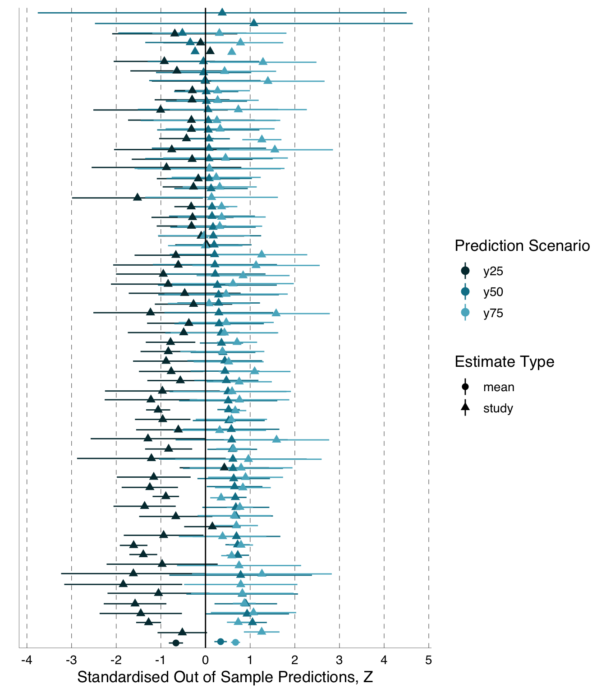
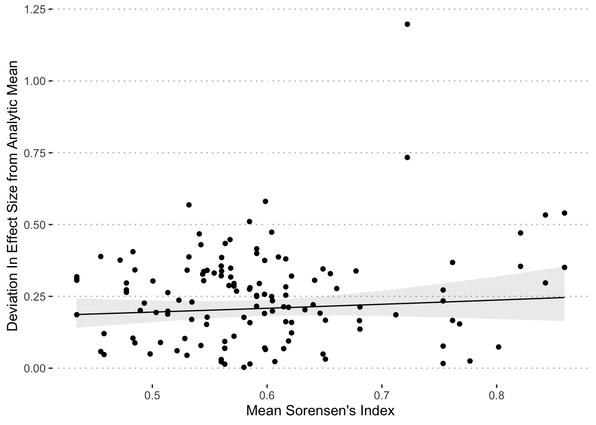
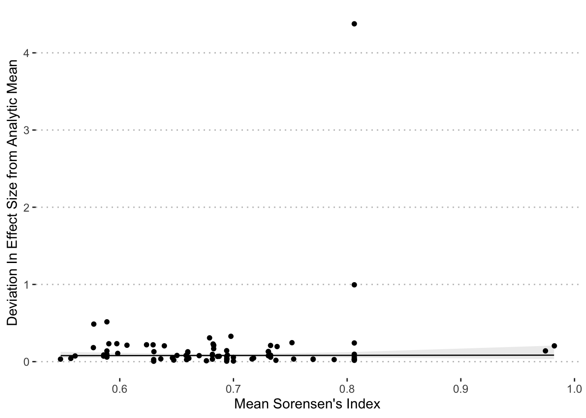

Same data, different analysts: variation in effect sizes due to analytical decisions in ecology and evolutionary biology.
Elliot Gould ![]()
Hannah S. Fraser
Shinichi Nakagawa
Simon C. Griffith
Peter A. Vesk
Fiona Fidler
Daniel G. Hamilton
Jessica K. Abbott
Luis A. Aguirre
Carles Alcaraz
Irith Aloni
Drew Altschul
Kunal Arekar
Jeff W. Atkins
Joe Atkinson
Christopher M. Baker
Kristian Bell
Suleiman Kehinde Bello
Iván Beltrán
Bernd J. Berauer
Michael Grant Bertram
Peter D. Billman
Charlie K Blake
Louis Bliard
Andrea Bonisoli-Alquati
Timothée Bonnet
Camille Nina Marion Bordes
Aneesh P. H. Bose
Thomas Botterill-James
Melissa Anna Boyd
Sarah A. Boyle
Tom Bradfer-Lawrence
Jennifer Bradham
Jack A Brand
Martin I. Brengdahl
Martin Bulla
Luc Bussière
Ettore Camerlenghi
Sara E. Campbell
Leonardo L F Campos
Anthony Caravaggi
Pedro Cardoso
Therese A. Catanach
Xuan Chen
Heung Ying Janet Chik
Emily Sarah Choy
Alec Philip Christie
Angela Chuang
Amanda J. Chunco
Bethany L Clark
Andrea Contina
Garth A Covernton
Murray P. Cox
Marco Crotti
Connor Davidson Crouch
Pietro B. D’Amelio
Alexandra Allison de Sousa
Timm Fabian Döbert
Adam J Dobson
Szymon Marian Drobniak
Alexandra Grace Duffy
Alison B. Duncan
Robert P. Dunn
Trishna Dutta
Luke Eberhart-Hertel
Jared Alan Elmore
Mahmoud Medhat Elsherif
Holly M English
David C. Ensminger
Ulrich Rainer Ernst
Stephen M. Ferguson
Esteban Fernandez-Juricic
Thalita Ferreira-Arruda Ferreira-Arruda
John Fieberg
Elizabeth A Finch
Evan A. Fiorenza
David N Fisher
Amélie Fontaine
Wolfgang Forstmeier
Yoan Fourcade
Graham S. Frank
Cathryn A. Freund
Eduardo Fuentes-Lillo
Sara L. Gandy
Dustin G. Gannon
Ana I. García-Cervigón
Alexis C. Garretson
Xuezhen Ge
William L. Geary
Charly Géron
Marc Gilles
Antje Girndt
Harrison B Goldspiel
Dylan G. E. Gomes
Megan Kate Good
Sarah C Goslee
J. Stephen Gosnell
Eliza M. Grames
Paolo Gratton
Nicholas M. Grebe
Skye M. Greenler
Maaike Griffioen
Daniel M Griffith
Frances J. Griffith
Jake J. Grossman
Ali Güncan
Stef Haesen
James G. Hagan
Heather A. Hager
Jonathan Philo Harris
Natasha Dean Harrison
Sarah Syedia Hasnain
Justin Chase Havird
Andrew J. Heaton
María Laura Herrera-Chaustre
Tanner J. Howard
Bin-Yan Hsu
Fabiola Iannarilli
Esperanza C. Iranzo
Erik N. K. Iverson
Saheed Olaide Jimoh
Douglas H. Johnson
Martin Johnsson
Tommaso Jucker
Martin Jung
Ineta Kačergytė
Oliver Kaltz
Alison Ke
Clint D. Kelly
Katharine Keogan
Friedrich Wolfgang Keppeler
Alexander K. Killion
Dongmin Kim
David P Kochan
Peter Korsten
Shan Kothari
Jonas Kuppler
Jillian M Kusch
Malgorzata Lagisz
Kristen Marianne Lalla
Daniel J. Larkin
Courtney L. Larson
Katherine S. Lauck
M. Elise Lauterbur
Alan Law
Don-Jean Léandri-Breton
Jonas J. Lembrechts
Kiara L’Herpiniere
Eva J. P. Lievens
Daniela Oliveira de Lima
Martin Luquet
Ross MacLeod
Kirsty H. Macphie
Kit Magellan
Magdalena M. Mair
Lisa E. Malm
Stefano Mammola
Caitlin P. Mandeville
Michael Manhart
Laura Milena Manrique-Garzon
Elina Mäntylä
Philippe Marchand
Benjamin Michael Marshall
Dominic Andreas Martin
Jake Mitchell Martin
Charles A. Martin
April Robin Martinig
Erin S. McCallum
Mark McCauley
Sabrina M. McNew
Scott J. Meiners
Thomas Merkling
Marcus Michelangeli
Maria Moiron
Bruno Moreira
Benjamin Mos
Taofeek Olatunbosun Muraina
Penelope Wrenn Murphy
Luca Nelli
Petri Niemelä
Josh Nightingale
Gustav Nilsonne
Sergio Nolazco
Sabine S. Nooten
Jessie Lanterman Novotny
Agnes Birgitta Olin
Kate L Ostevik
Facundo Xavier Palacio
Matthieu Paquet
Darren James Parker
David J Pascall
Valerie J. Pasquarella
John Harold Paterson
Ana Payo-Payo
Karen Marie Pedersen
Grégoire Perez
Kayla I. Perry
Patrice Pottier
Michael J. Proulx
Raphaël Proulx
Veronarindra Ramananjato
Onja H. Razafindratsima
Diana J. Rennison
Federico Riva
Sepand Riyahi Riyahi
Michael James Roast
Felipe Pereira Rocha
Dominique G. Roche
Cristian Román-Palacios
Michael S. Rosenberg
Jessica Ross
Freya E Rowland
Deusdedith Rugemalila
Avery L. Russell
Suvi Ruuskanen
Patrick Saccone
Asaf Sadeh
Stephen M Salazar
kris sales
Pablo Salmón
Alfredo Sánchez-Tójar
Francesca Santostefano
Hayden T. Schilling
Marcus Schmidt
Tim Schmoll
Adam C. Schneider
Allie E Schrock
Julia Schroeder
Nicolas Schtickzelle
Nick L. Schultz
Drew A. Scott
Michael Peter Scroggie
Julie Teresa Shapiro
Nitika Sharma Sharma
Caroline L Shearer
Diego Simón
Michael I. Sitvarin
Fabrício Luiz Skupien
Jeremy A Smith
Rahel Sollmann
Kaitlin Stack Whitney
Shannon Michael Still
Erica F. Stuber
Guy F. Sutton
Ben Swallow
Conor Claverie Taff
Elina Takola
Andrew J Tanentzap
Rocío Tarjuelo
Richard J. Telford
Christopher J. Thawley
Hugo Thierry
Jacqueline Thomson
Svenja Tidau
Emily M. Tompkins
Claire Marie Tortorelli
Andrew Trlica
Biz R Turnell
Lara Urban
Jessica Eva Megan van der Wal
Jens Van Eeckhoven
Stijn Van de Vondel
Francis van Oordt
Karen J Vanderwolf
Juliana Vélez
Diana Carolina Vergara-Florez
Brian C. Verrelli
Nora Villamil
Marcus Vinícius Vieira
Nora Villamil
Valerio Vitali
Julien Vollering
Jeffrey Walker
Xanthe J Walker
Jonathan A. Walter
Pawel Waryszak
Ryan J. Weaver
Ronja E. M. Wedegärtner
Daniel L. Weller
Shannon Whelan
Rachel Louise White
David William Wolfson
Andrew Wood
Scott W. Yanco
Jian D. L. Yen
Casey Youngflesh
Giacomo Zilio
Cédric Zimmer
Gregory Mark Zimmerman
Rachel A. Zitomer
Abstract
Although variation in effect sizes and predicted values among studies of similar phenomena is inevitable, such variation far exceeds what might be produced by sampling error alone. One possible explanation for variation among results is differences among researchers in the decisions they make regarding statistical analyses. A growing array of studies has explored this analytical variability in different (mostly social science) fields, and has found substantial variability among results, despite analysts having the same data and research question. We implemented an analogous study in ecology and evolutionary biology, fields in which there have been no empirical exploration of the variation in effect sizes or model predictions generated by the analytical decisions of different researchers. We used two unpublished datasets, one from evolutionary ecology (blue tit, Cyanistes caeruleus, to compare sibling number and nestling growth) and one from conservation ecology (Eucalyptus, to compare grass cover and tree seedling recruitment), and the project leaders recruited 174 analyst teams, comprising 246 analysts, to investigate the answers to prespecified research questions. Analyses conducted by these teams yielded 141 usable effects for the blue tit dataset, and 85 usable effects for the Eucalyptus dataset. We found substantial heterogeneity among results for both datasets, although the patterns of variation differed between them. For the blue tit analyses, the average effect was convincingly negative, with less growth for nestlings living with more siblings, but there was near continuous variation in effect size from large negative effects to effects near zero, and even effects crossing the traditional threshold of statistical significance in the opposite direction. In contrast, the average relationship between grass cover and Eucalyptus seedling number was only slightly negative and not convincingly different from zero, and most effects ranged from weakly negative to weakly positive, with about a third of effects crossing the traditional threshold of significance in one direction or the other. However, there were also several striking outliers in the Eucalyptus dataset, with effects far from zero. For both datasets, we found substantial variation in the variable selection and random effects structures among analyses, as well as in the ratings of the analytical methods by peer reviewers, but we found no strong relationship between any of these and deviation from the meta-analytic mean. In other words, analyses with results that were far from the mean were no more or less likely to have dissimilar variable sets, use random effects in their models, or receive poor peer reviews than those analyses that found results that were close to the mean. The existence of substantial variability among analysis outcomes raises important questions about how ecologists and evolutionary biologists should interpret published results, and how they should conduct analyses in the future.
1 Introduction
One value of science derives from its production of replicable, and thus reliable, results. When we repeat a study using the original methods we should be able to expect a similar result. However, perfect replicability is not a reasonable goal. Effect sizes will vary, and even reverse in sign, by chance alone (Gelman and Weakliem 2009). Observed patterns can differ for other reasons as well. It could be that we do not sufficiently understand the conditions that led to the original result so when we seek to replicate it, the conditions differ due to some ‘hidden moderator’. This hidden moderator hypothesis is described by meta-analysts in ecology and evolutionary biology as ‘true biological heterogeneity’ (Senior et al. 2016). This idea of true heterogeneity is popular in ecology and evolutionary biology, and there are good reasons to expect it in the complex systems in which we work (Shavit and Ellison 2017). However, despite similar expectations in psychology, recent evidence in that discipline contradicts the hypothesis that moderators are common obstacles to replicability, as variability in results in a large ‘many labs’ collaboration was mostly unrelated to commonly hypothesized moderators such as the conditions under which the studies were administered (Klein et al. 2018). Another possible explanation for variation in effect sizes is that researchers often present biased samples of results, thus reducing the likelihood that later studies will produce similar effect sizes (Open Science Collaboration 2015; Parker et al. 2016; Forstmeier, Wagenmakers, and Parker 2017; Fraser et al. 2018; Parker and Yang 2023). It also may be that although researchers did successfully replicate the conditions, the experiment, and measured variables, analytical decisions differed sufficiently among studies to create divergent results (Simonsohn, Simmons, and Nelson 2015; Silberzahn et al. 2018).
Analytical decisions vary among studies because researchers have many options. Researchers need to decide how to exclude possibly anomalous or unreliable data, how to construct variables, which variables to include in their models, and which statistical methods to use. Depending on the dataset, this short list of choices could encompass thousands or millions of possible alternative specifications (Simonsohn, Simmons, and Nelson 2015). However, researchers making these decisions presumably do so with the goal of doing the best possible analysis, or at least the best analysis within their current skill set. Thus it seems likely that some specification options are more probable than others, possibly because they have previously been shown (or claimed) to be better, or because they are more well known. Of course, some of these different analyses (maybe many of them) may be equally valid alternatives. Regardless, on probably any topic in ecology and evolutionary biology, we can encounter differences in choices of data analysis. The extent of these differences in analyses and the degree to which these differences influence the outcomes of analyses and therefore studies’ conclusions are important empirical questions. These questions are especially important given that many papers draw conclusions after applying a single method, or even a single statistical model, to analyze a dataset.
The possibility that different analytical choices could lead to different outcomes has long been recognized (Gelman and Loken 2013), and various efforts to address this possibility have been pursued in the literature. For instance, one common method in ecology and evolutionary biology involves creating a set of candidate models, each consisting of a different (though often similar) set of predictor variables, and then, for the predictor variable of interest, averaging the slope across all models (i.e. model averaging) (Burnham and Anderson 2002; Grueber et al. 2011). This method reduces the chance that a conclusion is contingent upon a single model specification, though use and interpretation of this method is not without challenges (Grueber et al. 2011). Further, the models compared to each other typically differ only in the inclusion or exclusion of certain predictor variables and not in other important ways, such as methods of parameter estimation. More explicit examination of outcomes of differences in model structure, model type, data exclusion, or other analytical choices can be implemented through sensitivity analyses (e.g., Noble et al. 2017). Sensitivity analyses, however, are typically rather narrow in scope, and are designed to assess the sensitivity of analytical outcomes to a particular analytical choice rather than to a large universe of choices. Recently, however, analysts in the social sciences have proposed extremely thorough sensitivity analysis, including ‘multiverse analysis’ (Steegen et al. 2016) and the ‘specification curve’ (Simonsohn, Simmons, and Nelson 2015), as a means of increasing the reliability of results. With these methods, researchers identify relevant decision points encountered during analysis and conduct the analysis many times to incorporate many plausible decisions made at each of these points. The study’s conclusions are then based on a broad set of the possible analyses and so allow the analyst to distinguish between robust conclusions and those that are highly contingent on particular model specifications. These are useful outcomes, but specifying a universe of possible modelling decisions is not a trivial undertaking. Further, the analyst’s knowledge and biases will influence decisions about the boundaries of that universe, and so there will always be room for disagreement among analysts about what to include. Including more specifications is not necessarily better. Some analytical decisions are better justified than others, and including biologically implausible specifications may undermine this process. Regardless, these powerful methods have yet to be adopted, and even more limited forms of sensitivity analyses are not particularly widespread. Most studies publish a small set of analyses and so the existing literature does not provide much insight into the degree to which published results are contingent on analytical decisions.
Despite the potential major impacts of analytical decisions on variance in results, the outcomes of different individuals’ data analysis choices have received limited empirical attention. The only formal exploration of this that we were aware of when we submitted our Stage 1 manuscript were (1) an analysis in social science that asked whether male professional football (soccer) players with darker skin tone were more likely to be issued red cards (ejection from the game for rule violation) than players with lighter skin tone (Silberzahn et al. 2018) and (2) an analysis in neuroimaging which evaluated nine separate hypotheses involving the neurological responses detected with fMRI in 108 participants divided between two treatments in a decision making task (Botvinik-Nezer et al. 2020). Several others have been published since (e.g., Huntington-Klein et al. 2021; Schweinsberg et al. 2021; Breznau et al. 2022; Coretta et al. 2023). In the red card study, twenty-nine teams designed and implemented analyses of a dataset provided by the study coordinators (Silberzahn et al. 2018). Analyses were peer reviewed (results blind) by at least two other participating analysts; a level of scrutiny consistent with standard pre-publication peer review. Among the final 29 analyses, odds-ratios varied from 0.89 to 2.93, meaning point estimates varied from having players with lighter skin tones receive more red cards (odds ratio < 1) to a strong effect of players with darker skin tones receiving more red cards (odds ratio > 1). Twenty of the 29 teams found a statistically-significant effect in the predicted direction of players with darker skin tones being issued more red cards. This degree of variation in peer-reviewed analyses from identical data is striking, but the generality of this finding has only just begun to be formally investigated.
In the neuroimaging study, 70 teams evaluated each of the nine different hypotheses with the available fMRI data (Botvinik-Nezer et al. 2020). These 70 teams followed a divergent set of workflows that produced a wide range of results. The rate of reporting of statistically significant support for the nine hypotheses ranged from 21% to 84%, and for each hypothesis on average, 20% of research teams observed effects that differed substantially from the majority of other teams. Some of the variability in results among studies could be explained by analytical decisions such as choice of software package, smoothing function, and parametric versus non-parametric corrections for multiple comparisons. However, substantial variability among analyses remained unexplained, and presumably emerged from the many different decisions each analyst made in their long workflows. Such variability in results among analyses from this dataset and from the very different red-card dataset suggests that sensitivity of analytical outcome to analytical choices may characterize many distinct fields, as several more recent many-analyst studies also suggest (Huntington-Klein et al. 2021; Schweinsberg et al. 2021; Breznau et al. 2022).
To further develop the empirical understanding of the effects of analytical decisions on study outcomes, we chose to estimate the extent to which researchers’ data analysis choices drive differences in effect sizes, model predictions, and qualitative conclusions in ecology and evolutionary biology. This is an important extension of the meta-research agenda of evaluating factors influencing replicability in ecology, evolutionary biology, and beyond (Fidler et al. 2017). To examine the effects of analytical decisions, we used two different datasets and recruited researchers to analyze one or the other of these datasets to answer a question we defined. The first question was “To what extent is the growth of nestling blue tits (Cyanistes caeruleus) influenced by competition with siblings?” To answer this question, we provided a dataset that includes brood size manipulations from 332 broods conducted over three years at Wytham Wood, UK. The second question was “How does grass cover influence Eucalyptus spp. seedling recruitment?” For this question, analysts used a dataset that includes, among other variables, number of seedlings in different size classes, percentage cover of different life forms, tree canopy cover, and distance from canopy edge from 351 quadrats spread among 18 sites in Victoria, Australia.
We explored the impacts of data analysts’ choices with descriptive statistics and with a series of tests to attempt to explain the variation among effect sizes and predicted values of the dependent variable produced by the different analysis teams for both datasets separately. To describe the variability, we present forest plots of the standardized effect sizes and predicted values produced by each of the analysis teams, estimate heterogeneity (both absolute, \(\tau^2\), and proportional, \(I^2\)) in effect size and predicted values among the results produced by these different teams, and calculate a similarity index that quantifies variability among the predictor variables selected for the different statistical models constructed by the different analysis teams. These descriptive statistics provide the first estimates of the extent to which explanatory statistical models and their outcomes in ecology and evolutionary biology vary based on the decisions of different data analysts. We then quantified the degree to which the variability in effect size and predicted values could be explained by (1) variation in the quality of analyses as rated by peer reviewers and (2) the similarity of the choices of predictor variables between individual analyses.
2 Methods
This project involved a series of steps (1-6) that began with identifying datasets for analyses and continued through recruiting independent groups of scientists to analyze the data, allowing the scientists to analyze the data as they saw fit, generating peer review ratings of the analyses (based on methods, not results), evaluating the variation in effects among the different analyses, and producing the final manuscript.
2.1 Step 1: Select Datasets
We used two previously unpublished datasets, one from evolutionary ecology and the other from ecology and conservation.
Evolutionary ecology
Our evolutionary ecology dataset is relevant to a sub-discipline of life-history research which focuses on identifying costs and trade-offs associated with different phenotypic conditions. These data were derived from a brood-size manipulation experiment imposed on wild birds nesting in boxes provided by researchers in an intensively studied population. Understanding how the growth of nestlings is influenced by the numbers of siblings in the nest can give researchers insights into factors such as the evolution of clutch size, determination of provisioning rates by parents, and optimal levels of sibling competition (Vander Werf 1992; DeKogel 1997; Royle et al. 1999; Verhulst, Holveck, and Riebel 2006; Nicolaus et al. 2009). Data analysts were provided this dataset and instructed to answer the following question: “To what extent is the growth of nestling blue tits (Cyanistes caeruleus) influenced by competition with siblings?”
Researchers conducted brood size manipulations and population monitoring of blue tits at Wytham Wood, a 380 ha woodland in Oxfordshire, U.K (1º 20’W, 51º 47’N). Researchers regularly checked approximately 1100 artificial nest boxes at the site and monitored the 330 to 450 blue tit pairs occupying those boxes in 2001-2003 during the experiment. Nearly all birds made only one breeding attempt during the April to June study period in a given year. At each blue tit nest, researchers recorded the date the first egg appeared, clutch size, and hatching date. For all chicks alive at age 14 days, researchers measured mass and tarsus length and fitted a uniquely numbered, British Trust for Ornithology (BTO) aluminium leg ring. Researchers attempted to capture all adults at their nests between day 6 and day 14 of the chick-rearing period. For these captured adults, researchers measured mass, tarsus length, and wing length and fitted a uniquely numbered BTO leg ring. During the 2001-2003 breeding seasons, researchers manipulated brood sizes using cross fostering. They matched broods for hatching date and brood size and moved chicks between these paired nests one or two days after hatching. They sought to either enlarge or reduce all manipulated broods by approximately one fourth. To control for effects of being moved, each reduced brood had a portion of its brood replaced by chicks from the paired increased brood, and vice versa. Net manipulations varied from plus or minus four chicks in broods of 12 to 16 to plus or minus one chick in broods of 4 or 5. Researchers left approximately one third of all broods unmanipulated. These unmanipulated broods were not selected systematically to match manipulated broods in clutch size or laying date. We have mass and tarsus length data from 3720 individual chicks divided among 167 experimentally enlarged broods, 165 experimentally reduced broods, and 120 unmanipulated broods. The full list of variables included in the dataset is publicly available (https://osf.io/hdv8m), along with the data (https://osf.io/qjzby).
Additional explanation: Shortly after beginning to recruit analysts, several analysts noted a small set of related errors in the blue tit dataset. We corrected the errors, replaced the dataset on our OSF site, and emailed the analysts on 19 April 2020 to instruct them to use the revised data. The email to analysts is available here (https://osf.io/4h53z). The errors are explained in that email.
Ecology and conservation
Our ecology and conservation dataset is relevant to a sub-discipline of conservation research which focuses on investigating how best to revegetate private land in agricultural landscapes. These data were collected on private land under the Bush Returns program, an incentive system where participants entered into a contract with the Goulburn Broken Catchment Management Authority and received annual payments if they executed predetermined restoration activities. This particular dataset is based on a passive regeneration initiative, where livestock grazing was removed from the property in the hopes that the Eucalyptus spp. overstorey would regenerate without active (and expensive) planting. Analyses of some related data have been published (Miles 2008; Vesk et al. 2016) but those analyses do not address the question analysts answered in our study. Data analysts were provided this dataset and instructed to answer the following question: “How does grass cover influence Eucalyptus spp. seedling recruitment?”.
Researchers conducted three rounds of surveys at 18 sites across the Goulburn Broken catchment in northern Victoria, Australia in winter and spring 2006 and autumn 2007. In each survey period, a different set of 15 x 15 m quadrats were randomly allocated across each site within 60 m of existing tree canopies. The number of quadrats at each site depended on the size of the site, ranging from four at smaller sites to 11 at larger sites. The total number of quadrats surveyed across all sites and seasons was 351. The number of Eucalyptus spp. seedlings was recorded in each quadrat along with information on the GPS location, aspect, tree canopy cover, distance to tree canopy, and position in the landscape. Ground layer plant species composition was recorded in three 0.5 x 0.5 m sub-quadrats within each quadrat. Subjective cover estimates of each species as well as bare ground, litter, rock and moss/lichen/soil crusts were recorded. Subsequently, this was augmented with information about the precipitation and solar radiation at each GPS location. The full list of variables included in the dataset is publicly available (https://osf.io/r5gbn), along with the data (https://osf.io/qz5cu).
2.2 Step 2: Recruitment and Initial Survey of Analysts
The lead team (TP, HF, SN, EG, SG, PV, FF) created a publicly available document providing a general description of the project (https://osf.io/mn5aj/). The project was advertised at conferences, via Twitter, using mailing lists for ecological societies (including Ecolog, Evoldir, and lists for the Environmental Decisions Group, and Transparency in Ecology and Evolution), and via word of mouth. The target population was active ecology, conservation, or evolutionary biology researchers with a graduate degree (or currently studying for a graduate degree) in a relevant discipline. Researchers could choose to work independently or in a small team. For the sake of simplicity, we refer to these as ‘analysis teams’ though some comprised one individual. We aimed for a minimum of 12 analysis teams independently evaluating each dataset (see sample size justification below). We simultaneously recruited volunteers to peer review the analyses conducted by the other volunteers through the same channels. Our goal was to recruit a similar number of peer reviewers and analysts, and to ask each peer reviewer to review a minimum of four analyses. If we were unable to recruit at least half the number of reviewers as analysis teams, we planned to ask analysts to serve also as reviewers (after they had completed their analyses), but this was unnecessary. All analysts and reviewers were offered the opportunity to share co-authorship on this manuscript and we planned to invite them to participate in the collaborative process of producing the final manuscript. All analysts signed [digitally] a consent (ethics) document (https://osf.io/xyp68/) approved by the Whitman College Institutional Review Board prior to being allowed to participate.
Preregistration Deviation:
Due to the large number of recruited analysts and reviewers and the anticipated challenges of receiving and integrating feedback from so many authors, we limited analyst and reviewer participation in the production of the final manuscript to an invitation to call attention to serious problems with the manuscript draft.
We identified our minimum number of analysts per dataset by considering the number of effects needed in a meta-analysis to generate an estimate of heterogeneity (\(\tau^{2}\)) with a 95% confidence interval that does not encompass zero. This minimum sample size is invariant regardless of \(\tau^{2}\). This is because the same t-statistic value will be obtained by the same sample size regardless of variance (\(\tau^{2}\)). We see this by first examining the formula for the standard error, SE for variance, (\(\tau^{2}\)) or SE(\(\tau^{2}\)) assuming normality in an underlying distribution of effect sizes (Knight 2000):
\[ SE({{τ}^2})=\sqrt{\frac{{t}^4}{n-1}} \tag{2.1}\]
and then rearranging the above formula to show how the t-statistic is independent of \(\tau^2\), as seen below.
\[ t=\frac{{τ}^2}{SE({{τ}^2})}=\sqrt{\frac{n-1}{2}} \tag{2.2}\]
We then find a minimum n = 12 according to this formula.
2.3 Step 3: Primary Data Analyses
Analysis teams registered and answered a demographic and expertise survey (https://osf.io/seqzy/). We then provided them with the dataset of their choice and requested that they answer a specific research question. For the evolutionary ecology dataset that question was “To what extent is the growth of nestling blue tits (Cyanistes caeruleus) influenced by competition with siblings?” and for the conservation ecology dataset it was “How does grass cover influence Eucalyptus spp. seedling recruitment?” Once their analysis was complete, they answered a structured survey (https://osf.io/neyc7/), providing analysis technique, explanations of their analytical choices, quantitative results, and a statement describing their conclusions. They also were asked to upload their analysis files (including the dataset as they formatted it for analysis and their analysis code [if applicable]) and a detailed journal-ready statistical methods section.
Preregistration Deviation:
We originally planned to have analysts complete a single survey (https://osf.io/neyc7/), but after we evaluated the results of that survey, we realized we would need a second survey (https://osf.io/8w3v5/) to adequately collect the information we needed to evaluate heterogeneity of results (step 5). We provided a set of detailed instructions with the follow-up survey, and these instructions are publicly available and can be found within the following files (blue tit: https://osf.io/kr2g9, Eucalyptus: https://osf.io/dfvym).
2.4 Step 4: Peer Reviews of Analyses
At minimum, each analysis was evaluated by four different reviewers, and each volunteer peer reviewer was randomly assigned methods sections from at least four analyst teams (the exact number varied). Each peer reviewer registered and answered a demographic and expertise survey identical to that asked of the analysts, except we did not ask about ‘team name’ since reviewers did not work in teams. Reviewers evaluated the methods of each of their assigned analyses one at a time in a sequence determined by the project leaders. We systematically assigned the sequence so that, if possible, each analysis was allocated to each position in the sequence for at least one reviewer. For instance, if each reviewer were assigned four analyses to review, then each analysis would be the first analysis assigned to at least one reviewer, the second analysis assigned to another reviewer, the third analysis assigned to yet another reviewer, and the fourth analysis assigned to a fourth reviewer. Balancing the order in which reviewers saw the analyses controls for order effects, e.g. a reviewer might be less critical of the first methods section they read than the last.
The process for a single reviewer was as follows. First, the reviewer received a description of the methods of a single analysis. This included the narrative methods section, the analysis team’s answers to our survey questions regarding their methods, including analysis code, and the dataset. The reviewer was then asked, in an online survey (https://osf.io/4t36u/), to rate that analysis on a scale of 0-100 based on this prompt: “Rate the overall appropriateness of this analysis to answer the research question (one of the two research questions inserted here) with the available data. To help you calibrate your rating, please consider the following guidelines:
- A perfect analysis with no conceivable improvements from the reviewer
- An imperfect analysis but the needed changes are unlikely to dramatically alter outcomes
- A flawed analysis likely to produce either an unreliable estimate of the relationship or an over-precise estimate of uncertainty
- A flawed analysis likely to produce an unreliable estimate of the relationship and an over-precise estimate of uncertainty
- A dangerously misleading analysis, certain to produce both an estimate that is wrong and a substantially over-precise estimate of uncertainty that places undue confidence in the incorrect estimate.
*Please note that these values are meant to calibrate your ratings. We welcome ratings of any number between 0 and 100.”
After providing this rating, the reviewer was presented with this prompt, in multiple-choice format: “Would the analytical methods presented produce an analysis that is (a) publishable as is, (b) publishable with minor revision, (c) publishable with major revision, (d) deeply flawed and unpublishable?” The reviewer was then provided with a series of text boxes and the following prompts: “Please explain your ratings of this analysis. Please evaluate the choice of statistical analysis type. Please evaluate the process of choosing variables for and structuring the statistical model. Please evaluate the suitability of the variables included in (or excluded from) the statistical model. Please evaluate the suitability of the structure of the statistical model. Please evaluate choices to exclude or not exclude subsets of the data. Please evaluate any choices to transform data (or, if there were no transformations, but you think there should have been, please discuss that choice).” After submitting this review, a methods section from a second analysis was then made available to the reviewer. This same sequence was followed until all analyses allocated to a given reviewer were provided and reviewed. After providing the final review, the reviewer was simultaneously provided with all four (or more) methods sections the reviewer had just completed reviewing, the option to revise their original ratings, and a text box to provide an explanation. The invitation to revise the original ratings was as follows: “If, now that you have seen all the analyses you are reviewing, you wish to revise your ratings of any of these analyses, you may do so now.” The text box was prefaced with this prompt: “Please explain your choice to revise (or not to revise) your ratings.”
Additional explanation: Unregistered analysis.
To determine how consistent peer reviewers were in their ratings, we assessed inter-rater reliability among reviewers for both the categorical and quantitative ratings combining blue tit and Eucalyptus data using Krippendorff’s alpha for ordinal and continuous data respectively. This provides a value that is between -1 (total disagreement between reviewers) and 1 (total agreement between reviewers).
2.5 Step 5: Evaluate Variation
The lead team conducted the analyses outlined in this section. We described the variation in model specification in several ways. We calculated summary statistics describing variation among analyses, including mean, SD, and range of number of variables per model included as fixed effects, the number of interaction terms, the number of random effects, and the mean, SD, and range of sample sizes. We also present the number of analyses in which each variable was included. We summarized the variability in standardized effect sizes and predicted values of dependent variables among the individual analyses using standard random effects meta-analytic techniques. First, we derived standardized effect sizes from each individual analysis. We did this for all linear models or generalized linear models by converting the \(t\) value and the degree of freedom (\(df\)) associated with regression coefficients (e.g. the effect of the number of siblings [predictor] on growth [response] or the effect of grass cover [predictor] on seedling recruitment [response]) to the correlation coefficient, \(r\), using the following:
\[ r=\sqrt{\frac{{t}^2}{\left({{t}^2}+df\right) }} \tag{2.3}\]
This formula can only be applied if \(t\) and \(df\) values originate from linear or generalized linear models [GLMs; Shinichi Nakagawa and Cuthill (2007)]. If, instead, linear mixed-effects models (LMMs) or generalized linear mixed-effects models (GLMMs) were used by a given analysis, the exact \(df\) cannot be estimated. However, adjusted \(df\) can be estimated, for example, using the Satterthwaite approximation of \(df\), \({df}_S\), [note that SAS uses this approximation to obtain \(df\) for LMMs and GLMMs; Luke (2017)]. For analyses using either LMMs or GLMMs that do not produce \({df}_S\) we planned to obtain \({df}_S\) by rerunning the same (G)LMMs using the lmer() or glmer() function in the lmerTest package in R (Kuznetsova, Brockhoff, and Christensen 2017; R Core Team 2022).
Preregistration Deviation:
Rather than re-run these analyses ourselves, we sent a follow-up survey (referenced above under “Primary data analyses”) to analysts and asked them to follow our instructions for producing this information. The instructions are publicly available and can be found within the following files (blue tit: https://osf.io/kr2g9, Eucalyptus: https://osf.io/dfvym).
We then used the \(t\) values and \(df_S\) from the models to obtain \(r\) as per the formula above. All \(r\) and accompanying \(df\) (or \(df_S\)) were converted to \(Z_r\) and its sampling variance; \(1/(n – 3)\) where \(n = df + 1\). Any analyses from which we could not derive a signed \(Z_r\), for instance one with a quadratic function in which the slope changed sign, were excluded from the analyses of Fisher’s \(Z_r\). We expected such analyses would be rare. In fact, most submitted analyses excluded from our meta-analysis of \(Z_r\) were excluded because of a lack of sufficient information provided by the analyst team rather than due to the use of effects that could not be converted to \(Z_r\). Regardless, as we describe below, we generated a second set of standardized effects (predicted values) that could (in principle) be derived from any explanatory model produced by these data.
Besides \(Z_r\), which describes the strength of a relationship based on the amount of variation in a dependent variable explained by variation in an independent variable, we also examined differences in the shape of the relationship between the independent and dependent variables. To accomplish this, we derived a point estimate (out-of-sample predicted value) for the dependent variable of interest for each of three values of our primary independent variable. We originally described these three values as associated with the 25th percentile, median, and 75th percentile of the independent variable and any covariates.
Preregistration Deviation: The original description of the out-of-sample specifications did not account for the facts that (a) some variables are not distributed in a way that allowed division in percentiles and that (b) variables could be either positively or negatively correlated with the dependent variable. We provide a more thorough description here: We derived three point-estimates (out-of-sample predicted values) for the dependent variable of interest; one for each of three values of our primary independent variable that we specified. We also specified values for all other variables that could have been included as independent variables in analysts’ models so that we could derive the predicted values from a fully specified version of any model produced by analysts. For all potential independent variables, we selected three values or categories. Of the three we selected, one was associated with small, one with intermediate, and one with large values of one typical dependent variable (day 14 chick weight for the blue tit data and total number of seedlings for the Eucalyptus data; analysts could select other variables as their dependent variable, but the others typically correlated with the two identified here). For continuous variables, this means we identified the 25th percentile, median, and 75th percentile and, if the slope of the linear relationship between this variable and the typical dependent variable was positive, we left the quartiles ordered as is. If, instead, the slope was negative, we reversed the order of the independent variable quartiles so that the ‘lower’ quartile value was the one associated with the lower value for the dependent variable. In the case of categorical variables, we identified categories associated with the 25th percentile, median, and 75th percentile values of the typical dependent variable after averaging the values for each category. However, for some continuous and categorical predictors, we also made selections based on the principle of internal consistency between certain related variables, and we fixed a few categorical variables as identical across all three levels where doing so would simplify the modelling process (specification tables available: blue tit: https://osf.io/86akx; Eucalyptus: https://osf.io/jh7g5).
We used the 25th and 75th percentiles rather than minimum and maximum values to reduce the chance of occupying unrealistic parameter space. We planned to derive these predicted values from the model information provided by the individual analysts. All values (predictions) were first transformed to the original scale along with their standard errors (SE); we used the delta method (Ver Hoef 2012) for the transformation of SE. We used the square of the SE associated with predicted values as the sampling variance in the meta-analyses described below, and we planned to analyze these predicted values in exactly the same ways as we analyzed \(Z_r\) in the following analyses.
Preregistration Deviation: Because analysts of blue tit data chose different dependent variables on different scales, after transforming out-of-sample values to the original scales, we standardized all values as z scores (‘standard scores’) to put all dependent variables on the same scale and make them comparable. This involved taking each relevant value on the original scale (whether a predicted point estimate or a SE associated with that estimate) and subtracting the value in question from the mean value of that dependent variable derived from the full dataset and then dividing this difference by the standard deviation, SD, corresponding to the mean from the full dataset. Thus, all our out-of-sample prediction values from the blue tit data are from a distribution with the mean of 0 and SD of 1. We did not add this step for the Eucalyptus data because (a) all responses were on the same scale (counts of Eucalyptus stems) and were thus comparable and (b) these data, with many zeros and high skew, are poorly suited for z scores.
We plotted individual effect size estimates (\(Z_r\)) and predicted values of the dependent variable (\(y_i\)) and their corresponding 95% confidence / credible intervals in forest plots to allow visualization of the range and precision of effect size and predicted values. Further, we included these estimates in random effects meta-analyses (Higgins et al. 2003; Borenstein et al. 2017) using the metafor package in R (Viechtbauer 2010; R Core Team 2022):
\[ Z_r \sim 1 + \left(1 \vert \text{analysisID} \right) \tag{2.4}\]
\[ y_i \sim 1 + \left(1 \vert \text{analysisID} \right) \tag{2.5}\]
where \(y_i\) is the predicted value for the dependent variable at the 25th percentile, median, or 75th percentile of the independent variables. The individual \(Z_r\) effect sizes were weighted with the inverse of sampling variance for \(Z_r\). The individual predicted values for dependent variable (\(y_i\)) were weighted by the inverse of the associated \(SE^2\) (original registration omitted “inverse of the” in error). These analyses provided an average \(Z_r\) score or an average \(y_i\) with corresponding 95% confidence interval and allowed us to estimate two heterogeneity indices, \(\tau^2\) and \(I^2\). The former, \(\tau^2\), is the absolute measure of heterogeneity or the between-study variance (in our case, between-effect variance) whereas \(I^2\) is a relative measure of heterogeneity. We obtained the estimate of relative heterogeneity (\(I^2\)) by dividing the between-effect variance by the sum of between-effect and within-effect variance (sampling error variance). \(I^2\) is thus, in a standard meta-analysis, the proportion of variance that is due to heterogeneity as opposed to sampling error. When calculating \(I^2\), within-study variance is amalgamated across studies to create a “typical” within-study variance which serves as the sampling error variance (Higgins et al. 2003; Borenstein et al. 2017). Our goal here was to visualize and quantify the degree of variation among analyses in effect size estimates (Shinichi Nakagawa and Cuthill 2007). We did not test for statistical significance.
Additional explanation: Our use of \(I^{2}\) to quantify heterogeneity violates an important assumption, but this violation does not invalidate our use of \(I^{2}\) as a metric of how much heterogeneity can derive from analytical decisions. In standard meta-analysis, the statistic \(I^{2}\) quantifies the proportion of variance that is greater than we would expect if differences among estimates were due to sampling error alone (Rosenberg 2013). However, it is clear that this interpretation does not apply to our value of \(I^{2}\) because \(I^{2}\) assumes that each estimate is based on an independent sample (although these analyses can account for non-independence via hierarchical modelling), whereas all our effects were derived from largely or entirely overlapping subsets of the same dataset. Despite this, we believe that \(I^{2}\) remains a useful statistic for our purposes. This is because, in calculating \(I^{2}\), we are still setting a benchmark of expected variation due to sampling error based on the variance associated with each separate effect size estimate, and we are assessing how much (if it all) the variability among our effect sizes exceeds what would be expected had our effect sizes been based on independent data. In other words, our estimates can tell us how much proportional heterogeneity is possible from analytical decisions alone when sample sizes (and therefore meta-analytic within-estimate variance) are similar to the ones in our analyses. Among other implications, our violation of the independent sample assumption means that we (dramatically) over-estimate the variance expected due to sampling error, and because \(I^{2}\) is a proportional estimate, we thus underestimate the actual proportion of variance due to differences among analyses other than sampling error. However, correcting this underestimation would create a trivial value since we designed the study so that much of the variance would derive from analytic decisions as opposed to differences in sampled data. Instead, retaining the \(I^{2}\) value as typically calculated provides a useful comparison to \(I^{2}\) values from typical meta-analyses.
Interpretation of \(\tau^2\) also differs somewhat from traditional meta-analysis, and we discuss this further in the Results.
Finally, we assessed the extent to which deviations from the meta-analytic mean by individual effect sizes (\(Z_r\)) or the predicted values of the dependent variable (\(y_i\)) were explained by the peer rating of each analysis team’s method section, by a measurement of the distinctiveness of the set of predictor variables included in each analysis, and by the choice of whether or not to include random effects in the model. The deviation score, which served as the dependent variable in these analyses, is the absolute value of the difference between the meta-analytic mean \(Z_r\) (or \(y_i\)) and the individual \(Z_r\) (or \(y_i\)) estimate for each analysis. We used the Box-Cox transformation on the absolute values of deviation scores to achieve an approximately normal distribution (c.f. Fanelli and Ioannidis 2013; Fanelli, Costas, and Ioannidis 2017 : supplement). We described variation in this dependent variable with both a series of univariate analyses and a multivariate analysis. All these analyses were general linear (mixed) models. These analyses were secondary to our estimation of variation in effect sizes described above. We wished to quantify relationships among variables, but we had no a priori expectation of effect size and made no dichotomous decisions about statistical significance.
When examining the extent to which reviewer ratings (on a scale from 0 to 100) explained deviation from the average effect (or predicted value), each analysis had been rated by multiple peer reviewers, so for each reviewer score to be included, we include each deviation score in the analysis multiple times. To account for the non-independence of multiple ratings of the same analysis, we planned to include analysis identity as a random effect in our general linear mixed model in the lme4 package in R (Bates et al. 2015; R Core Team 2022). To account for potential differences among reviewers in their scoring of analyses, we also planned to include reviewer identity as a random effect:
\[ \begin{align} \text{DeviationScore}_j = \text{BoxCox}(abs(\text{DeviationFromMean}_{j})) \\ {\text{DeviationScore}}_{ij} \sim Rating_{ij} + \text{ReviewerID}_{i} + {\text{AnalysisID}}_{j} \\ {\text{ReviewerID}}_i \sim \mathcal{N}(0,\sigma^2) \\ {\text{AnalysisID}}_j \sim \mathcal{N}(0,\sigma^2) \end{align} \tag{2.6}\]
Where \(DeviationFromMean_{j}\) is the deviation from the meta-analytic mean for the jth analysis, \(ReviewerID_{i}\) is the random intercept assigned to each i reviewer, and \(AnalysisID_{j}\) is the random intercept assigned to each j analysis, both of which are assumed to be normally distributed with a mean of 0 and a variance of \(\sigma^2\). Absolute deviation scores were Box-Cox transformed using the step_box_cox() function from the timetk package in R (Dancho and Vaughan 2023; R Core Team 2022).
We conducted a similar analysis with the four categories of reviewer ratings ((1) deeply flawed and unpublishable, (2) publishable with major revision, (3) publishable with minor revision, (4) publishable as is) set as ordinal predictors numbered as shown here. As with the analyses above, we planned for these analyses to also include random effects of analysis identity and reviewer identity. Both of these analyses (1: 1-100 ratings as the fixed effect, 2: categorical ratings as the fixed effects) were planned to be conducted eight times for each dataset. Each of the four responses (\(Z_r\), \(y_{25th}\), \(y_{50th}\), \(y_{75th}\)) were to be compared once to the initial ratings provided by the peer reviewers, and again based on the revised ratings provided by the peer reviewers.
Preregistration Deviation:
We planned to include random effects of both analysis identity and reviewer identity in these models comparing reviewer ratings with deviation scores. However, after we received the analyses, we discovered that a subset of analyst teams had either conducted multiple analyses and/or identified multiple effects per analysis as answering the target question. We therefore faced an even more complex potential set of random effects. We decided that including team ID, analysis ID, and effect ID along with reviewer ID as random effects in the same model would almost certainly lead to model fit problems, and so we started with simpler models including just effect ID and reviewer ID. However, even with this simpler structure, our dataset was sparse, with reviewers rating a small number of analyses, resulting in models with singular fit (Section C.2). Removing one of the random effects was necessary for the models to converge. The models that included the categorical quality rating converged when including reviewer ID, and the models that included the continuous quality rating converged when including effect ID.
We conducted analyses only with the final peer ratings after the opportunity for revision, not with the initial ratings. This was because when we recorded the final ratings, they over-wrote the initial ratings, and so we did not have access to those initial values.
The next set of univariate analyses sought to explain deviations from the mean effects based on a measure of the distinctiveness of the set of variables included in each analysis. As a ‘distinctiveness’ score, we used Sorensen’s Similarity Index (an index typically used to compare species composition across sites), treating variables as species and individual analyses as sites. To generate an individual Sorensen’s value for each analysis required calculating the pairwise Sorensen’s value for all pairs of analyses (of the same dataset), and then taking the average across these Sorensen’s values for each analysis. We calculated the Sorensen’s index values using the betapart package (Baselga et al. 2023) in R:
\[ \beta_{Sorensen} = \frac{b+c}{2a+b+c} \tag{2.7}\]
where \(a\) is the number of variables common to both analyses, \(b\) is the number of variables that occur in the first analysis but not in the second and \(c\) is the number of variables that occur in the second analysis. We then used the per-model average Sorensen’s index value as an independent variable to predict the deviation score in a general linear model, and included no random effect since each analysis is included only once, in R (R Core Team 2022):
\[ \text{DeviationScore}_{j} \sim \beta \text{Sorensen}_{j} \tag{2.8}\]
Additional explanation:
When we planned this analysis, we anticipated that analysts would identify a single primary effect from each model, so that each model would appear in the analysis only once. Our expecation was incorrect because some analysts identified >1 effect per analysis, but we still chose to specify our model as registered and not use a random effect. This is because most models produced only one effect and so we expected that specifying a random effect to account for the few cases where >1 effect was included for a given model would prevent model convergence.
Note that this analysis contrasts with the analyses in which we used reviewer ratings as predictors because in the analyses with reviewer ratings, each effect appeared in the analysis approximately four times due to multiple reviews of each analysis, and so it was much more important to account for that variance through a random effect.
Finally, we conducted a multivariate analysis with the five predictors described above (peer ratings 0-100 and peer ratings of publishability 1-4; both original and revised and Sorensen’s index, plus a sixth, presence /absence of random effects) with random effects of analysis identity and reviewer identity in the lme4 package in R (Bates et al. 2015; R Core Team 2022). We had stated here in the text that we would use only the revised (final) peer ratings in this analysis, so the absence of the initial ratings is not a deviation from our plan:
\[ \begin{align} {\text{DeviationScore}}_{j} \sim {\text{RatingContinuous}}_{ij}\space+ \\ {\text{RatingCategorical}}_{ij} \space + \\ {\beta\text{Sorensen}}_{j} \space + \\ {\text{AnalysisID}}_{j} \space + \\ {\text{ReviewerID}}_{i} \\ {\text{ReviewerID}}_i \sim \mathcal{N}(0,\sigma^2) \\ {\text{AnalysisID}}_j \sim \mathcal{N}(0,\sigma^2) \end{align} \tag{2.9}\]
We conducted all the analyses described above eight times; for each of the four responses (\(Z_r\), \(y_{25th}\), \(y_{50th}\), \(y_{75th}\)) one time for each of the two datasets.
We have publicly archived all relevant data, code, and materials on the Open Science Framework (https://osf.io/mn5aj/). Archived data includes the original datasets distributed to all analysts, any edited versions of the data analyzed by individual groups, and the data we analyzed with our meta-analyses, which include the effect sizes derived from separate analyses, the statistics describing variation in model structure among analyst groups, and the anonymized answers to our surveys of analysts and peer reviewers. Similarly, we have archived both the analysis code used for each individual analysis (where available) and the code from our meta-analyses. We have also archived copies of our survey instruments from analysts and peer reviewers.
Our rules for excluding data from our study were as follows. We excluded from our synthesis any individual analysis submitted after we had completed peer review or those unaccompanied by analysis files that allow us to understand what the analysts did. We also excluded any individual analysis that did not produce an outcome that could be interpreted as an answer to our primary question (as posed above) for the respective dataset. For instance, this means that in the case of the data on blue tit chick growth, we excluded any analysis that did not include something that can be interpreted as growth or size as a dependent (response) variable, and in the case of the Eucalyptus establishment data, we excluded any analysis that did not include a measure of grass cover among the independent (predictor) variables. Also, as described above, any analysis that could not produce an effect that could be converted to a signed \(Z_r\) was excluded from analyses of \(Z_r\).
Preregistration Deviation:
Some analysts had difficulty implementing our instructions to derive the out-of-sample predictions, and in some cases (especially for the Eucalyptus data), they submitted predictions with implausibly extreme values. We believed these values were incorrect and thus made the conservative decision to exclude out-of-sample predictions where the estimates were > 3 standard deviations from the mean value from the full dataset.
Additional explanation: We conducted several unregistered analyses.
1. Evaluating model fit.
We evaluated all fitted models using the performance() function from the performance package (Lüdecke et al. 2021) and the glance() function from the broom.mixed package (Bolker et al. 2022). For all models, we calculated the square root of the residual variance (Sigma) and the root mean squared error (RMSE). For GLMMs performance() calculates the marginal and conditional \(R^2\) values as well as the contribution of random effects (ICC), based on Nakagawa et al. (2017). The conditional \(R^2\) accounts for both the fixed and random effects, while the marginal \(R^2\) considers only the variance of the fixed effects. The contribution of random effects is obtained by subtracting the marginal \(R^2\) from the conditional \(R^2\).
2. Exploring outliers and analysis quality.
After seeing the forest plots of \(Z_r\) values and noticing the existence of a small number of extreme outliers, especially from the Eucalyptus analyses, we wanted to understand the degree to which our heterogeneity estimates were influenced by these outliers. To explore this question, we removed the highest two and lowest two values of \(Z_r\) in each dataset and re-calculated our heterogeneity estimates.
To help understand the possible role of the quality of analyses in driving the heterogeneity we observed among estimates of \(Z_r\), we recalculated our heterogeneity estimates after removing all effects from analysis teams that had received at least one rating of “deeply flawed and unpublishable” and then again after removing all effects from analysis teams with at least one rating of either “deeply flawed and unpublishable” or “publishable with major revisions”. We also used self-identified levels of statistical expertise to examine heterogeneity when we retained analyses only from analysis teams that contained at least one member who rated themselves as “highly proficient” or “expert” (rather than “novice” or “moderately proficient”) in conducting statistical analyses in their research area in our intake survey.
3. Exploring possible impacts of lower quality estimates of degrees of freedom.
Our meta-analyses of variation in \(Z_r\) required variance estimates derived from estimates of the degrees of freedom in original analyses from which \(Z_r\) estimates were derived. While processing the estimates of degrees of freedom submitted by analysts, we identified a subset of these estimates in which we had lower confidence because two or more effects from the same analysis were submitted with identical degrees of freedom. We therefore conducted a second set of (more conservative) meta-analyses that excluded these \(Z_r\) estimates with identical estimates of degrees of freedom and we present these analyses in the supplement.
Additional explanation: Best practices in many-analysts research.
After we initiated our project, a paper was published outlining best practices in many-analysts studies (Aczel et al. 2021). Although we did not have access to this document when we implemented our project, our study complies with these practices nearly completely. The one exception is that although we requested analysis code from analysts, we did not require submission of code.
2.6 Step 6: Facilitated Discussion and Collaborative Write-Up of Manuscript
We planned for analysts and initiating authors to discuss the limitations, results, and implications of the study and collaborate on writing the final manuscript for review as a stage-2 Registered Report.
Preregistration Deviation: As described above, due to the large number of recruited analysts and reviewers and the anticipated challenges of receiving and integrating feedback from so many authors, we limited analyst and reviewer participation in the production of the final manuscript to an invitation to call attention to serious problems with the manuscript draft.
All data cleaning and preparation for our analyses was conducted in R (R Core Team 2022) and is publicly archived at https://zenodo.org/doi/10.5281/zenodo.10046152. Please see Section 4.1 for the full list of packages and their citations used in our analysis pipeline.
We built an R package, ManyEcoEvo to conduct the analyses described in this chapter https://github.com/egouldo/ManyEcoEvo/. This same package can be used to reproduce our analyses or replicate the analyses described here using alternate datasets. The full suite of analyses we conducted is completely reproducible and can be reproduced and queried using (WE WILL INSERT LINK TO BINDR when coding complete).
2.7 Ethics, consent and permissions
We obtained permission to conduct this research from the Whitman College Institutional Review Board (IRB). As part of this permission, the IRB approved the consent form (https://osf.io/xyp68/) that all participants completed prior to joining the study. The authors declare that they have no competing interests.
3 Results
3.1 Summary Statistics
In total, 173 analyst teams, comprising 246 analysts, contributed 182 usable analyses of the two datasets examined in this study which yielded 215 effects. Analysts produced 135 distinct effects that met our criteria for inclusion in at least one of our meta-analyses for the blue tit dataset. Analysts produced 81 distinct effects meeting our criteria for inclusion for the Eucalyptus dataset. Excluded analyses and effects either did not answer our specified biological questions, were submitted with insufficient information for inclusion in our meta-analyses, or were incompatible with production of our effect size(s). We expected this final scenario (incompatible analyses), for instance we cannot extract a \(Z_r\) from random forest models, which is why we analyzed two distinct types of effects, \(Z_r\) and out-of-sample. Effects included in only a subset of our meta-analyses provided sufficient information for inclusion in only that subset (see Table A.1). For both datasets, most submitted analyses incorporated mixed effects. Submitted analyses of the blue tit dataset typically specified normal error and analyses of the Eucalyptus dataset typically specified a non-normal error distribution (Table A.1).
For both datasets, the composition of models varied substantially in regards to the number of fixed and random effects, interaction terms, and the number of data points used, and these patterns differed somewhat between the blue tit and Eucalyptus analyses (See Table A.2). Focussing on the models included in the \(Z_r\) analyses (because this is the larger sample), blue tit models included a similar number of fixed effects on average (mean 5.2 \(\pm\) 2.92 SD) as Eucalyptus models (mean 5.01 \(\pm\) 3.83 SD), but the standard deviation in number of fixed effects was somewhat larger in the Eucalyptus models. The average number of interaction terms was much larger for the blue tit models (mean 0.44 \(\pm\) 1.11 SD) than for the Eucalyptus models (mean 0.16 \(\pm\) 0.65 SD), but still under 0.5 for both, indicating that most models did not contain interaction terms. Blue tit models also contained more random effects (mean 3.53 \(\pm\) 2.08 SD) than Eucalyptus models (mean 1.41 \(\pm\) 1.09 SD). The maximum possible sample size in the blue tit dataset (3720 nestlings) was an order of magnitude larger than the maximum possible in the Eucalyptus dataset (351 plots), and the means and standard deviations of the sample size used to derive the effects eligible for our study were also an order of magnitude greater for the blue tit dataset (mean 2622.07 \(\pm\) 939.28 SD) relative to the Eucalyptus models (mean 298.43 \(\pm\) 106.25 SD). However, the standard deviation in sample size from the Eucalyptus models was heavily influenced by a few cases of dramatic sub-setting (described below). Approximately three quarters of Eucalyptus models used sample sizes within 3% of the maximum. In contrast, fewer than 20% of blue tit models relied on sample sizes within 3% of the maximum, and approximately 50% of blue tit models relied on sample sizes 29% or more below the maximum.
Analysts provided qualitative descriptions of the conclusions of their analyses. Each analysis team provided one conclusion per dataset. These conclusions could take into account the results of any formal analyses completed by the team as well as exploratory and visual analyses of the data. Here we summarize all qualitative responses, regardless of whether we had sufficient information to use the corresponding model results in our quantitative analyses below. We classified these conclusions into the categories summarized below (Table 3.1):
Mixed: some evidence supporting a positive effect, some evidence supporting a negative effect
Conclusive negative: negative relationship described without caveat
Qualified negative: negative relationship but only in certain circumstances or where analysts express uncertainty in their result
Conclusive none: analysts interpret the results as conclusive of no effect
None qualified: analysts describe finding no evidence of a relationship but they describe the potential for an undetected effect
Qualified positive: positive relationship described but only in certain circumstances or where analysts express uncertainty in their result
Conclusive positive: positive relationship described without caveat
For the blue tit dataset, most analysts concluded that there was negative relationship between measures of sibling competition and nestling growth, though half the teams expressed qualifications or described effects as mixed or absent. For the Eucalyptus dataset, there was a broader spread of conclusions with at least one analyst team providing conclusions consistent with each conclusion category. The most common conclusion for the Eucalyptus dataset was that there was no relationship between grass cover and Eucalyptus recruitment (either conclusive or qualified description of no relationship), but more than half the teams concluded that there were effects; negative, positive, or mixed.
| Dataset | Mixed | Negative Conclusive | Negative Qualified | None Conclusive | None Qualified | Positive Qualified | Positive Conclusive |
|---|---|---|---|---|---|---|---|
| blue tit | 5 | 37 | 27 | 4 | 1 | 0 | 0 |
| Eucalyptus | 8 | 6 | 12 | 19 | 12 | 4 | 2 |
3.2 Distribution of Effects
Effect Sizes (\(Z_r\))
Although the majority (111 of 132) of the usable \(Z_r\) effects from the blue tit dataset found nestling growth decreased with sibling competition, and the meta-analytic mean \(Z_r\) (Fisher’s transformation of the correlation coefficient) was convincingly negative (-0.35, -0.35 \(\pm\) 0.06, 0.08 95% CI), there was substantial variability in the strength and the direction of this effect. \(Z_r\) ranged from -1.55 to 0.38, and approximately continuously from (SECOND SMALLEST to SECOND LARGEST) ( Figure 3.1 (a) and Table 3.4), and of the 111 effects with negative slopes, 92 had confidence intervals exluding 0. Of the 20 with positive slopes indicating increased nestling growth in the presence of more siblings, 3 had confidence intervals excluding zero (Figure 3.1 A).
Meta-analysis of the Eucalyptus dataset also showed substantial variability in the strength of effects as measured by \(Z_r\), and unlike with the blue tits, a notable lack of consistency in the direction of effects (Figure 3.1 (b), Table 3.4). \(Z_r\) ranged from -4.47 (Figure A.2), indicating a strong tendency for reduced Eucalyptus seedling success as grass cover increased, to 0.39, indicating the opposite. Although the range of reported effects skewed strongly negative, this was due to a small number of substantial outliers. Most values of \(Z_r\) were relatively small with values < |0.2| and the meta-analytic mean effect size was close to zero (-0.09, -0.17 \(\pm\) 0.12, 0.26 95% CI). Of the 79 effects, fifty-three had confidence intervals overlapping zero, approximately a quarter (fifteen) crossed the traditional threshold of statistical significance indicating a negative relationship between grass cover and seedling success, and eleven crossed the significance threshold indicating a positive relationship between grass cover and seedling success (Figure 3.1 (b)).

Out-of-sample predictions \(y_{i}\)
As with the effect size \(Z_r\), we observed substantial variability in the size of out-of-sample predictions derived from the analysts’ models. Blue tit predictions (Figure 3.2), which were z-score-standardised to accommodate the use of different response variables, always ranged far in excess of one standard deviation. In the \(y_{25}\) scenario, model predictions ranged from -1.85 to 0.43 (a range of 2.68 standard deviations), in the \(y_{50}\) they ranged from -0.53 to 1.11 (a range of 1.63 standard deviations), and in the \(y_{75}\) scenario they ranged from -0.03 to 1.58 (a range of 1.9 standard deviations). As should be expected given the existence of both negative and positive \(Z_r\) values, all three out-of-sample scenarios produced both negative and positive predictions, although as with the \(Z_r\) values, there is a clear trend for scenarios with more siblings to be associated with smaller nestlings. This is supported by the meta-analytic means of these three sets of predictions which were -0.66 (95% CI -0.82–0.5) for the \(y_{25}\), 0.34 (95% CI 0.2-0.48) for the \(y_{50}\), and 0.67 (95% CI 0.57-0.77) for the \(y_{75}\).
Eucalyptus out-of-sample predictions also varied substantially (Figure 3.3), but because they were not z-score-standardised and are instead on the original count scale, the types of interpretations we can make differ. The predicted Eucalyptus seedling counts per 15 x 15 m plot for the \(y_{25}\) scenario ranged from 0.04 to 33.66, for the \(y_{50}\) scenario ranged from 0.03 to 13.02, and for the \(y_{75}\) scenario they ranged from 0.05 to 21.93. The meta-analytic mean predictions for these three scenarios were similar; 0.58 (95% CI 0.21-1.37) for the \(y_{25}\), 0.92 (95% CI 0.36-1.65) for the \(y_{50}\), and 1.67 (95% CI 0.8-2.83) for the \(y_{75}\) scenarios respectively.
3.3 Quantifying Heterogeneity
Effect Sizes (\(Z_r\))
We quantified both absolute (\(\tau^{2}\)) and relative (\(I^{2}\)) heterogeneity resulting from analytical variation. Both measures suggest that substantial variability among effect sizes was attributable to the analytical decisions of analysts.
The total absolute level of variance beyond what would typically be expected due to sampling error, \(\tau^{2}\) (Table 3.2), among all usable blue tit effects was 0.088 and for Eucalyptus effects was 0.267. This is similar to or exceeding the median value (0.105) of \(\tau^{2}\) found across 31 recent meta-analyses (calculated from the data in Yang et al. 2023). The similarity of our observed values to values from meta-analyses of different studies based on different data suggest the potential for a large portion of heterogeneity to arise from analytical decisions. For further discussion of interpretation of \(\tau^{2}\) in our study, please consult discussion of post hoc analyses below.
Team, \({\tau}_{effectID}^{2}\) is the absolute heterogeneity for the random effect EffectID, nested under Team, and \({\tau}_{total}^{2}\) is the total absolute heterogeneity. \({I^2}_{Total}\) is the proportional heterogeneity; the proportion of the variance among effects not attributable to sampling error, \({I^2}_{Team}\) is the subset of the proportional heterogeneity due to differences among Teams and \({I^2}_{Team,effectID}\) is subset of the proportional heterogeneity attributable to among-EffectID differences.
| Dataset | $${\tau}_{total}^{2}$$ | $${\tau}_{Team}^{2}$$ | $${\tau}_{effectID}^{2}$$ | $${I^2}_{Total}$$ | $${I^2}_{Team}$$ | $${I^2}_{Team, effectID}$$ | N.Obs |
|---|---|---|---|---|---|---|---|
| All analyses | |||||||
| All analyses, Outliers Removed | |||||||
| Analyses receiving at least one 'Unpublishable' rating removed | |||||||
| Analyses receiving at least one 'Unpublishable' and or 'Major Revisions' rating removed | |||||||
| Analyses from teams that include highly proficient or expert data analysts | |||||||
In our analyses, \(I^{2}\) is a plausible index of how much more variability among effect sizes we have observed, as a proportion, than we would have observed if sampling error were driving variability. We discuss our interpretation of \(I^{2}\) further in the methods, but in short, it is a useful metric for comparison to values from published meta-analyses and provides a plausible value for how much heterogeneity could arise in a normal meta-analysis with similar sample sizes due to analytical variability alone. In our study, total \(I^{2}\) for the blue tit \(Z_r\) estimates was extremely large, at 97.73%, as was the Eucalyptus estimate (98.59% Table 3.2).
Although the overall \(I^{2}\) values were similar for both Eucalyptus and blue tit analyses, the relative composition of that heterogeneity differed. For both datasets, the majority of heterogeneity in \(Z_r\) was driven by differences among effects as opposed to differences among teams, though this was more prominent for the Eucalyptus dataset, where nearly all of the total heterogeneity was driven by differences among effects (91.71%) as opposed to differences among teams (6.88%) (Table 3.2).
Out-of-sample predictions (\(y_{i}\))
We observed substantial heterogeneity among out-of-sample estimates, but the pattern differed somewhat from the \(Z_r\) values (Table 3.3). Among the blue tit predictions, \(I^{2}\) ranged from medium-high for the \(y_{25}\) scenario (68.36) to low (27.02) for the \(y_{75}\) scenario. Among the Eucalyptus predictions, \(I^{2}\) values were uniformly high (>82%). For both datasets, most of the existing heterogeneity among predicted values was attributable to among-team differences, with the exception of the \(y_{50}\) analysis of the Eucalyptus dataset. We are limited in our interpretation of \(\tau^{2}\) for these estimates because, unlike for the \(Z_r\) estimates, we have no benchmark for comparison with other meta-analyses.
Team, \({\tau}_{effectID}^{2}\) is the absolute heterogeneity for the random effect EffectID, nested under Team, and \({\tau}_{total}^{2}\) is the total absolute heterogeneity. \({I^2}_{Total}\) is the proportional heterogeneity; the proportion of the variance among effects not attributable to sampling error, \({I^2}_{Team}\) is the subset of the proportional heterogeneity due to differences among Teams and \({I^2}_{Team,effectID}\) is subset of the proportional heterogeneity attributable to among-EffectID differences.
| Prediction Scenario | $${N}_{Obs}$$ | $${\tau}_{Total}$$ | $${\tau}_{Team}^{2}$$ | $${\tau}_{effectID}^{2}$$ | $${I^2}_{Total}$$ | $${I^2}_{Team}$$ | $${I^2}_{Team, effectID}$$ |
|---|---|---|---|---|---|---|---|
| blue tit | |||||||
| Eucalyptus | |||||||
3.4 Post-hoc Analysis: Exploring outlier characteristics and the effect of outlier removal on heterogeneity
Effect Sizes (\(Z_r\))
The outlier Eucalyptus \(Z_r\) values were striking and merited special examination. The three negative outliers had very low sample sizes were based on either small subsets of the dataset or, in one case, extreme aggregation of data. The outliers associated with small subsets had sample sizes (\(n=\) 117, 90) that were less than half of the total possible sample size of 351. The case of extreme aggregation involved averaging all values within each of the 18 sites in the dataset.
Surprisingly, both the largest and smallest effect sizes in the blue tit analyses (Figure 3.1 (a)) come from the same analyst (anonymous ID: Adelong), with identical models in terms of the explanatory variable structure, but with different response variables. However, the radical change in effect was primarily due to collinearity with covariates. The primary predictor variable (brood count after manipulation) was accompanied by several collinear variables, including the highly collinear (correlation of approximately 0.9 (Figure D.2)) covariate (brood size at day 14) in both analyses. In the analysis of nestling weight, brood count after manipulation showed a strong positive partial correlation with weight after controlling for brood count at day 14 and treatment category (increased, decreased, unmanipulated). In that same analysis, the most collinear covariate (the day 14 count) had a negative partial correlation with weight. In the analysis with tarsus length as the response variable, these partial correlations were almost identical in absolute magnitude, but reversed in sign and so brood count after manipulation was now the collinear predictor with the negative relationship. The two models were therefore very similar, but the two collinear predictors simply switched roles, presumably because a subtle difference in the distribution of weight and tarsus length data.
When we dropped the Eucalyptus outliers, \(I^{2}\) decreased from high (98.59%), using Higgins’ (Higgins et al. 2003) suggested benchmark, to between moderate and high (66.19%, Table 3.2). However, more notably, \(\tau^2\) dropped from 0.27 to 0.01, indicating that, once outliers were excluded, the observed variation in effects was similar to what we would expect if sampling error were driving the differences among effects (since \(\tau^2\) is the variance in addition to that driven by sampling error). The interpretation of this value of \(\tau^2\) in the context of our many-analyst study is somewhat different than a typical meta-analysis, however, since in our study (especially for Eucalyptus, where most analyses used almost exactly the same data points), there is almost no role for sampling error in driving the observed differences among the estimates. Thus, rather than concluding that the variability we observed among estimates (after removing outliers) was due only to sampling error (because \(\tau^2\) became small: 10% of the median from Yang et al. 2023), we instead conclude that the observed variability, which must be due to the divergent choices of analysts rather than sampling error, is approximately of the same magnitude as what we would have expected if, instead, sampling error, and not analytical heterogeneity, were at work. Presumably, if sampling error had actually also been at work, it would have acted as an additional source of variability and would have led total variability among estimates to be higher. With total variability higher and thus greater than expected due to sampling error alone, \(\tau^2\) would have been noticeably larger. Conversely, dropping outliers from the set of blue tit effects did not meaningfully reduce \(I^{2}\) , and only modestly reduced \(\tau^2\) (Table 3.2). Thus, effects at the extremes of the distribution were much stronger contributors to total heterogeneity for effects from analyses of the Eucalyptus than for the blue tit dataset.
| Dataset | $$\hat\mu$$ | $$SE[\hat\mu]$$ | 95%CI | statistic | p-value |
|---|---|---|---|---|---|
| All analyses | |||||
| All analyses, outliers removed | |||||
| Analyses from teams with highly proficient or expert data analysts | |||||
| Analyses receiving at least one 'Unpublishable' and or 'Major Revisions' rating removed | |||||
| Analyses receiving at least one 'Unpublishable' rating removed | |||||
Out-of-sample predictions (\(y_{i}\))
We did not conduct these post hoc analyses on the out-of-sample predictions as the number of eligible effects was smaller and the pattern of outliers differed.
3.5 Post-hoc analysis: Exploring the effect of removing analyses with poor peer ratings on heterogeneity
Effect Sizes (\(Z_r\))
Removing poorly rated analyses had limited impact on the meta-analytic means (Figure B.3). For the Eucalyptus dataset, the meta-analytic mean shifted from -0.09 to -0.02 when effects from analyses rated as unpublishable were removed, and to -0.04 when effects from analyses rated, at least once, as unpublishable or requiring major revisions were removed. Further, the confidence intervals for all of these means overlapped each of the other means (Table 3.4). We saw similar patterns for the blue tit dataset, with only small shifts in the meta-analytic mean, and confidence intervals of all three means overlapping each other mean (Table 3.4). Refitting the meta-analysis with a fixed effect for categorical ratings also showed no indication of differences in group meta-analytic means due to peer ratings (Figure B.1).
For the blue tit dataset, removing poorly-rated analyses led to only negligible changes in \(I^{2}_{Total}\) and relatively minor impacts on \(\tau^{2}\) . However, for the Eucalyptus dataset, removing poorly-rated analyses led to notable reductions in \(I^{2}_{Total}\) and substantial reductions in \(\tau^{2}\). When including all analyses, the Eucalyptus \(I^{2}_{Total}\) was 98.59% and \(\tau^{2}\) was 0.27, but eliminating analyses with ratings of “unpublishable” reduced \(I^{2}_{Total}\) to 79.74% and \(\tau^{2}\) to 0.01, and removing also those analyses “needing major revisions” left \(I^{2}_{Total}\) at 88.91% and \(\tau^{2}\) at 0.03 (Table 3.2). Additionally, the allocations of \(I^{2}\) to the team versus individual effect were altered for both blue tit and Eucalyptus meta-analyses by removing poorly rated analyses, but in different ways. For blue tit meta-analysis, between a third and two-thirds of the total \(I^{2}\) was attributable to among-team variance in most analyses until both analyses rated “unpublishable” and analyses rated in need of “major revision” were eliminated, in which case almost all remaining heterogeneity was attributable to among-effect differences. In contrast, for Eucalyptus meta-analysis, the among-team component of \(I^{2}\) was less than third until both analyses rated “unpublishable” and analyses rated in need of “major revision” were eliminated, in which case almost 90% of heterogeneity was attributable to differences among teams.
Out-of-sample predictions \(y_{i}\)
We did not conduct these post hoc analyses on the out-of-sample predictions as the number of eligible effects was smaller and our ability to interpret heterogeneity values for these analyses was limited.
3.6 Post-hoc analysis: Exploring the effect of including only analyses conducted by analysis teams with at least one member self-rated as “highly proficient” or “expert” in conducting statistical analyses in their research area
Effect Sizes (\(Z_r\))
Including only analyses conducted by teams that contained at least one member who rated themselves as “highly proficient” or “expert” in conducting the relevant statistical methods had negligible impacts on the meta-analytic means (Table 3.4), the distribution of \(Z_r\) effects (Figure B.4), or heterogeneity estimates (Table 3.2), which remained extremely high.
Out-of-sample predictions \(y_{i}\)
We did not conduct these post hoc analyses on the out-of-sample predictions as the number of eligible effects was smaller.
3.7 Post-hoc analysis: Exploring the effect of excluding estimates of \(Z_r\) in which we had reduced confidence
As described in our addendum to the methods, we identified a subset of estimates of \(Z_r\) in which we had less confidence because of features of the submitted degrees of freedom. Excluding these effects in which we had lower confidence had minimal impact on the meta-analytic mean and the estimates of total \(I^{2}\) and \(\tau^{2}\) for both blue tit and Eucalyptus meta-analyses, regardless of whether outliers were also excluded (Table B.1).
3.8 Explaining Variation in Deviation Scores
None of the pre-registered predictors explained substantial variation in deviation among submitted statistical effects from the meta-analytic mean (Table 3.5, Table 3.6). Note that the extremely high \(R^{2}_{\text{Conditional}}\) values from the analyses of continuous peer ratings as predictors of deviation scores are a function of the random effects, not the fixed effect of interest. These high values of the \(R^{2}_{\text{Conditional}}\) result from the fact that each effect size was included in the analysis multiple times, to allow comparison with ratings from the multiple peer reviewers who reviewed each analysis, and therefore when we included effect ID as a random effect, the observations within each random effect category were identical.
| Dataset | $$R^2$$ | $$R^{2}_{Conditional}$$ | $$R^{2}_{Marginal}$$ | ICC | $$\sigma$$ | RMSE | $$N_{Obs.}$$ |
|---|---|---|---|---|---|---|---|
| Deviation explained by categorical ratings | |||||||
| blue tit | 0.0903 | 6.67e-03 | 0.0842 | 6.52e-01 | 6.32e-01 | 473 | |
| Eucalyptus | 0.1319 | 1.24e-02 | 0.1209 | 1.06e+00 | 1.02e+00 | 346 | |
| Deviation explained by continuous ratings | |||||||
| blue tit | 1.0000 | 2.00e-26 | 1.0000 | 1.63e-05 | 1.56e-12 | 473 | |
| Eucalyptus | 0.9998 | 6.57e-30 | 0.9998 | 7.93e-03 | 7.09e-14 | 346 | |
| Deviation explained by Sorensen's index | |||||||
| blue tit | 1.11e-03 | 6.81e-01 | 6.76e-01 | 124 | |||
| Eucalyptus | 5.06e-04 | 1.14e+00 | 1.12e+00 | 72 | |||
| Deviation explained by inclusion of random effects | |||||||
| blue tit | 2.68e-02 | 6.58e-01 | 6.53e-01 | 131 | |||
| Eucalyptus | 8.67e-08 | 1.12e+00 | 1.10e+00 | 79 | |||
| Parameter | Effects | Group | Coefficient | SE | 95%CI | t | df | p |
|---|---|---|---|---|---|---|---|---|
| Deviation explained by inclusion of random effects - Eucalyptus | ||||||||
| Deviation explained by Sorensen’s index - Eucalyptus | ||||||||
| Deviation explained by Sorensen’s index - blue tit | ||||||||
| Deviation explained by continuous ratings - Eucalyptus | ||||||||
| Deviation explained by continuous ratings - blue tit | ||||||||
| Deviation explained by categorical ratings - Eucalyptus | ||||||||
| Deviation explained by categorical ratings - blue tit | ||||||||
3.9 Deviation Scores as explained by Reviewer Ratings
Effect Sizes (\(Z_r\))
We obtained reviews from 128 reviewers who reviewed analyses for a mean of 3.27 (range 1 - 11) analysis teams. Analyses of the blue tit dataset received a total of 240 reviews, each was reviewed by a mean of 3.87 (SD 0.71, range 3-5) reviewers. Analyses of the Eucalyptus dataset received a total of 178 reviews, each was reviewed by a mean of 4.24 (SD 0.79, range 3-6) reviewers. We tested for inter-rater-reliability to examine how similarly reviewers reviewed each analysis and found approximately no agreement among reviewers. When considering continuous ratings, IRR was 0.01, and for categorical ratings, IRR was -0.14.
Many of the models of deviance as a function of peer ratings faced issues of failure to converge or singularity due to sparse design matrices with our pre-registered random effects (Effect_Id and Reviewer_ID) (see supplementary material C.1). These issues persisted after increasing the tolerance and changing the optimizer. For both Eucalyptus and blue tit datasets, models with continuous ratings as a predictor were singular when both pre-registered random effects were included.
When using only categorical ratings as predictors, models converged only when specifying reviewer ID as a random effect. That model had a \({R}_{C}^2\) of 0.09 and a \({R}_{M}^2\) of 0.01. The model using the continuous ratings converged for both random effects (in isolation), but not both. We present results for the model using study ID as a random effect because we expected it would be a more important driver of variation in deviation scores. That model had a \({R}_{C}^2\) of 1 and a \({R}_{M}^2\) of 0.01 for the blue tit dataset and a \({R}_{C}^2\) of 1 and a \({R}_{M}^2\) of 0.01 for the Eucalyptus dataset. Neither continuous or categorical reviewer ratings of the analyses meaningfully predicted deviance from the meta-analytic mean (Table 3.6, Figure 3.4). We re-ran the multi-level meta-analysis with a fixed-effect for the categorical publishability ratings and found no difference in mean standardised effect sizes among publishability ratings (Figure B.1).
Out-of-sample predictions (\(y_{i}\))
Some models of the influence of reviewer ratings on out-of-sample predictions (\(y_{i}\)) had issues with convergence and singularity of fit (see Table C.2) and those models that converged and were not singular showed no strong relationship (Figure C.2, Figure C.3), as with the \(Zr\) analyses.
3.10 Deviation scores as explained by the distinctiveness of variables in each analysis
Effect Sizes (\(Z_r\))
We employed Sorensen’s index to calculate the distinctiveness of the set of predictor variables used in each model (Figure 3.5). The mean Sorensen’s score for blue tit analyses was 0.69 (range 0.55-0.98), and for Eucalyptus analyses was 0.59 (range 0.43-0.86).
We found no meaningful relationship between distinctiveness of variables selected and deviation from the meta-analytic mean (Table 3.6, Figure 3.5) for either blue tit (mean 0.23, 95% CI -1,1.46) or Eucalyptus effects (mean 0.29, 95% CI -2.74,3.32).


Out-of-sample predictions (\(y_{i}\))
As with the \(Z_r\) estimates, we did not observe any convincing relationships between deviation scores of out-of-sample predictions and Sorensen’s index values. Please see supplementary material C.4.2.
3.11 Deviation scores as explained by the inclusion of random effects
Effect Sizes (\(Z_r\))
There were only three blue tit analyses that did not include random effects, which is below the pre-registered threshold for fitting a model of the Box-Cox transformed deviation from the meta-analytic mean as a function of whether the analysis included random-effects. However, 17 Eucalyptus analyses included only fixed effects, which crossed our pre-registered threshold. Consequently, we performed this analysis for the Eucalyptus dataset only. There was no relationship between random-effect inclusion and deviation from meta-analytic mean among the Eucalyptus analyses (Table 3.6, Figure 3.6).
Out-of-sample predictions (\(y_{i}\))
As with the \(Z_r\) estimates, we did not examine the possibility of a relationship between the inclusion of random effects and the deviation scores of the blue tit out-of-sample predictions. When we examined the possibility of this relationship for the Eucalyptus effects, we found consistent evidence of somewhat higher Box-Cox-transformed deviation values for models including a random effect, meaning the models including random effects averaged slightly higher deviation from the meta-analytic means (Figure C.5).
3.12 Multivariate Analysis Effect size (\(Z_r\)) and Out-of-sample predictions (\(y_{i}\))
Like the univariate models, the multivariate models did a poor job of explaining deviations from the meta-analytic mean. Because we pre-registered a multivariate model that contained collinear predictors that produce results which are not readily interpretable, we present these models in the supplement. We also had difficulty with convergence and singularity for multivariate models of out-of-sample (\(y_i\)) result, and had to adjust which random effects we included (Table C.7). However, no multivariate analyses of Eucalyptus out-of-sample results avoided problems of convergence or singularity, no matter which random effects we included (Table C.7). We therefore present no multivariate Eucalyptus \(y_i\) models. We present parameter estimates from multivariate \(Z_r\) models for both datasets (Table C.5, Table C.6) and from \(y_i\) models from the blue tit dataset (Table C.8, Table C.9). We include interpretation of the results from these models in the supplement, but the results do not change the interpretations we present above based on the univariate analyses.
4 Discussion
When a large pool of ecologists and evolutionary biologists analyzed the same two datasets to answer the corresponding two research questions, they produced substantially heterogeneous sets of answers. Although the variability in analytical outcomes was high for both datasets, the patterns of this variability differed distinctly between them. For the blue tit dataset, there was nearly continuous variability across a wide range of \(Z_r\) values. In contrast, for the Eucalyptus dataset, there was less variability across most of the range, but more striking outliers at the tails. Among out-of-sample predictions, there was again almost continuous variation across a wide range (2 SD) among blue tit estimates. For Eucalyptus, out-of-sample predictions were also notably variable, with about half the predicted stem count values at <2 but the other half being much larger, and ranging to nearly 40 stems per 15 m x 15 m plot. We investigated several hypotheses for drivers of this variability within datasets, but found little support for any of these. Most notably, even when we excluded analyses that had received one or more poor peer reviews, the heterogeneity in results largely persisted. Regardless of what drives the variability, the existence of such dramatically heterogeneous results when ecologists and evolutionary biologists seek to answer the same questions with the same data should trigger conversations about how ecologists and evolutionary biologists analyze data and interpret the results of their own analyses and those of others in the literature (e.g., Silberzahn et al. 2018; Simonsohn, Simmons, and Nelson 2020; Auspurg and Brüderl 2021; Breznau et al. 2022).
Our observation of substantial heterogeneity due to analytical decisions is consistent with a growing body of work, much of it from the quantitative social sciences (e.g., Silberzahn et al. 2018; Botvinik-Nezer et al. 2020; Huntington-Klein et al. 2021; Schweinsberg et al. 2021; Breznau et al. 2022; Coretta et al. 2023). In all of these studies, when volunteers from the discipline analyzed the same data, they produced a worryingly diverse set of answers to a pre-set question. This diversity always included a wide range of effect sizes, and in most cases, even involved effects in opposite directions. Thus, our result should not be viewed as an anomalous outcome from two particular datasets, but instead as evidence from additional disciplines regarding the heterogeneity that can emerge from analyses of complex datasets to answer questions in probabilistic science. Not only is our major observation consistent with other studies, it is, itself, robust because it derived primarily from simple forest plots that we produced based on a small set of decisions that were mostly registered before data gathering and which conform to widely accepted meta-analytic practices.
Unlike the strong pattern we observed in the forest plots, our other analyses, both registered and post hoc, produced either inconsistent patterns, weak patterns, or the absence of patterns. Our registered analyses found that deviations from the meta-analytic mean by individual effect sizes (\(Z_r\)) or the predicted values of the dependent variable (\(y\)) were poorly explained by our hypothesized predictors: peer rating of each analysis team’s method section, a measurement of the distinctiveness of the set of predictor variables included in each analysis, or whether the model included random effects. However, in our post hoc analyses, we found that dropping analyses identified as unpublishable or in need of major revision by at least one reviewer modestly reduced the observed heterogeneity among the \(Z_r\) outcomes, but only for Eucalyptus analyses, apparently because this led to the dropping of the major outlier. This limited role for peer review in explaining the variability in our results should be interpreted cautiously because the inter-rater reliability among peer reviewers was extremely low, and at least some analyses that appeared flawed to us were not marked as flawed by reviewers. However, the hypothesis that poor quality analyses drove the heterogeneity we observed was also contradicted by our observation that analysts’ self-declared statistical expertise appeared unrelated to heterogeneity. When we retained only analyses from teams including at least one member with high self-declared levels of expertise, heterogeneity among effect sizes remained high. Thus, our results suggest lack of statistical expertise is not the primary factor responsible for the heterogeneity we observed, although further work is merited before rejecting a role for statistical expertise. Not surprisingly, simply dropping outlier values of \(Z_r\) for Eucalyptus analyses, which had more extreme outliers, led to less observable heterogeneity in the forest plots, and also reductions in our quantitative measures of heterogeneity. We did not observe a similar effect in the blue tit dataset because that dataset had outliers that were much less extreme and instead had more variability across the core of the distribution.
Our major observations raise two broad questions; why was the variability among results so high, and why did the pattern of variability differ between our two datasets. One important and plausible answer to the first question is that much of the heterogeneity derives from the lack of a precise relationship between the two biological research questions we posed and the data we provided. This lack of a precise relationship between data and question creates many opportunities for different model specifications, and so may inevitably lead to varied analytical outcomes (Auspurg and Brüderl 2021). However, we believe that the research questions we posed are consistent with the kinds of research question that ecologists and evolutionary biologists typically work from. When designing the two biological research questions, we deliberately sought to represent the level of specificity we typically see in these disciplines. This level of specificity is evident when we look at the research questions posed by some recent meta-analyses in these fields:
“how [does] urbanisation impact mean phenotypic values and phenotypic variation … [in] paired urban and non-urban comparisons of avian life-history traits” (Capilla-Lasheras et al. 2022)
“[what are] the effects of ocean acidification on the crustacean exoskeleton, assessing both exoskeletal ion content (calcium and magnesium) and functional properties (biomechanical resistance and cuticle thickness)” (Siegel et al. 2022)
“[what is] the extent to which restoration affects both the mean and variability of biodiversity outcomes … [in] terrestrial restoration” (Atkinson et al. 2022)
“[does] drought stress [have] a negative, positive, or null effect on aphid fitness” (Leybourne et al. 2021)
“[what is] the influence of nitrogen-fixing trees on soil nitrous oxide emissions” (Kou-Giesbrecht and Menge 2021)
There is not a single precise answer to any of these questions, nor to the questions we posed to analysts in our study. And this lack of single clear answers will obviously continue to cause uncertainty since ecologists and evolutionary biologists conceive of the different answers from the different statistical models as all being answers to the same general question. A possible response would be a call to avoid these general questions in favor of much more precise alternatives (Auspurg and Brüderl 2021). However, the research community rewards researchers who pose broad questions (Simons, Shoda, and Lindsay 2017), and so researchers are unlikely to narrow their scope without a change in incentives. Further, we suspect that even if individual studies specified narrow research questions, other scientists would group these more narrow questions into broader categories, for instance in meta-analyses, because it is these broader and more general questions that often interest the research community.
Although variability in statistical outcomes among analysts may be inevitable, our results raise questions about why this variability differed between our two datasets. We are particularly interested in the differences in the distribution of \(Z_r\) since the distributions of out-of-sample predictions were on different scales for the two datasets, thus limiting the value of comparisons. The forest plots of \(Z_r\) from our two datasets showed distinct patterns, and these differences are consistent with several alternative hypotheses. The results submitted by analysts of the Eucalyptus dataset showed a small average (close to zero) with most estimates also close to zero (± 0.2), though about a third far enough above or below zero to cross the traditional threshold of statistical significance. There were a small number of striking outliers that were very far from zero. In contrast, the results submitted by analysts of the blue tit dataset showed an average much further from zero (- 0.35) and a much greater spread in the core distribution of estimates across the range of \(Z_r\) values (± 0.5 from the mean), with few modest outliers. So, why was there more spread in effect sizes (across the estimates that are not outliers) in the blue tit analyses relative to the Eucalyptus analyses?
One possible explanation for the lower heterogeneity among most Eucalyptus \(Z_r\) effects is that weak relationships may limit the opportunities for heterogeneity in analytical outcome. Some evidence for this idea comes from two sets of “many labs” studies in psychology (Klein et al. 2014, 2018). In these studies, many independent lab groups each replicated a large set of studies, including, for each study, the experiment, data collection, and statistical analyses. These studies showed that, when the meta-analytic mean across the replications from different labs was small, there was much less heterogeneity among the outcomes than when the mean effect sizes were large (Klein et al. 2014, 2018). Of course, a weak average effect size would not prevent divergent effects in all circumstances. As we saw with the Eucalyptus analyses, taking a radically smaller subset of the data can lead to dramatically divergent effect sizes even when the mean with the full dataset is close to zero.
Our observation that dramatic sub-setting in the Eucalyptus dataset was associated with correspondingly dramatic divergence in effect sizes leads us towards another hypothesis to explain the differences in heterogeneity between the Eucalyptus and blue tit analysis sets. It may be that when analysts often divide a dataset into subsets, the result will be greater heterogeneity in analytical outcome for that dataset. Although we saw sub-setting associated with dramatic outliers in the Eucalyptus dataset, nearly all other analyses of Eucalyptus data used very close to the same set of 351 samples, and as we saw, these effects did not vary substantially. However, analysts often analyzed only a subset of the blue tit data, and as we observed, sample sizes were much more variable among blue tit effects, and the effects themselves were also much more variable. Important to note here is that subsets of data may differ from each other for biological reasons, but they may also differ due to sampling error. Sampling error is a function of sample size, and sub-samples are, by definition, smaller samples, and so more subject to variability in effects due to sampling error (Jennions et al. 2013).
Other features of datasets are also plausible candidates for driving heterogeneity in analytical outcomes, including features of covariates. In particular, relationships between covariates and the response variable as well as relationships between covariates and the primary independent variable (collinearity) can strongly influence the modeled relationship between the independent variable of interest and the dependent variable (Morrissey and Ruxton 2018; Dormann et al. 2013). Therefore, inclusion or exclusion of these covariates can drive heterogeneity in effect sizes (\(Z_r\)). Also, as we saw with the two most extreme \(Z_r\) values from the blue tit analyses, in multivariate models with collinear predictors, extreme effects can emerge when estimating partial correlation coefficients due to high collinearity, and conclusions can differ dramatically depending on which relationship receives the researcher’s attention. Therefore, differences between datasets in the presence of strong and/or collinear covariates could influence the differences in heterogeneity in results among those datasets.
Although it is too early in the many-analyst research program to conclude which analytical decisions or which features of datasets are the most important drivers of heterogeneity in analytical outcomes, we must still grapple with the possibility that analytical outcomes may vary substantially based on the choices we make as analysts. If we assume that, at least sometimes, different analysts will produce dramatically different statistical outcomes, what should we do as ecologists and evolutionary biologists? We review some ideas below.
The easiest path forward after learning about this analytical heterogeneity would be simply to continue with “business as usual”, where researchers report results from a small number of statistical models. A case could be made for this path based on our results. For instance, among the blue tit analyses, the precise values of the estimated \(Z_r\) effects varied substantially, but the average effect was convincingly different from zero, and a majority of individual effects (84%) were in the same direction. Arguably, many ecologists and evolutionary biologists appear primarily interested in the direction of a given effect and the corresponding p-value (Fidler et al. 2006), and so the variability we observed when analyzing the blue tit dataset may not worry these researchers. Similarly, most effects from the Eucalyptus analyses were relatively close to zero, and about two-thirds of these effects did not cross the traditional threshold of statistical significance. Therefore, a large proportion of people analyzing these data would conclude that there was no effect, and this is consistent with what we might conclude from the meta-analysis.
However, we find the counter arguments to “business as usual” to be compelling. For blue tits, there were a substantial minority of calculated effects that would be interpreted by many biologists as indicating the absence of an effect (28%), and there were three traditionally ‘significant’ effects in the opposite direction to the average. The qualitative conclusions of analysts also reflected substantial variability, with fully half of teams drawing a conclusion distinct from the one we draw from the distribution as a whole. These teams with different conclusion were either uncertain about the negative relationship between competition and nestling growth, or they concluded that effects were mixed or absent. For the Eucalyptus analyses, this issue is more concerning. Around two-thirds of effects had confidence intervals overlapping zero, and of the third of analyses with confidence intervals excluding zero, almost half were positive, and the rest were negative. Accordingly, the qualitative conclusions of the Eucalyptus teams were spread across the full range of possibilities. But even these problems are optimistic.
A potentially larger argument against “business as usual” is that it provides the raw material for biasing the literature. When different model specifications readily lead to different results, analysts may be tempted to report the result that appears most interesting, or that is most consistent with expectation (Gelman and Loken 2013; Forstmeier, Wagenmakers, and Parker 2017). There is growing evidence that researchers in ecology and evolutionary biology often report a biased subset of the results they produce (Deressa et al. 2023; Kimmel, Avolio, and Ferraro 2023), and that this bias exaggerates the average size of effects in the published literature between 30 and 150% (Yang et al. 2023; Parker and Yang 2023). The bias then accumulates in meta-analyses, apparently more than doubling the rate of conclusions of “statistical significance” in published meta-analyses above what would have been found in the absence of bias (Yang et al. 2023). Thus, “business as usual” does not just create noisy results, it helps create systematically misleading results.
Overall, our results suggest to us that, where there is a diverse set of plausible analysis options, no single analysis should be considered a complete or reliable answer to a research question. We contend that ecologists and evolutionary biologists typically do multiple analyses (as many of our analyst teams did) however, soe of these analyses dont make it into the published manuscript. Further, because of the evidence that ecologists and evolutionary biologists often present a biased subset of the analyses they conduct (Deressa et al. 2023; Yang et al. 2023; Kimmel, Avolio, and Ferraro 2023), we do not expect that even a collection of different effect sizes from different studies will accurately represent the true distribution of effects (Yang et al. 2023). Therefore, we believe that an increased level of skepticism of the outcomes of single analyses, or even single meta-analyses, is warranted going forward. We recognize that some researchers have long maintained a healthy level of skepticism of individual studies as part of sound and practical scientific practice, and it is possible that those researchers will be neither surprised nor concerned by our results. However, we doubt that many researchers are sufficiently aware of the potential problems of analytical flexibility to be appropriately skeptical.
If we are skeptical of single analyses, the path forward may be multiple analyses per dataset. One possibility is the traditional robustness or sensitivity check (e.g., Pei et al. 2020; Briga and Verhulst 2021), in which the researcher presents several alternative versions of an analysis to demonstrate that the result is ‘robust’ (Lu and White 2014). Unfortunately, robustness checks are at risk of the same potential biases of reporting found in other studies (Silberzahn et al. 2018), especially given the relatively few models typically presented. However, these risks could be minimized by running more models and doing so with pre-registration or registered report. Another option is model averaging. Averages across models often perform well (e.g., Taylor and Taylor 2023), and in some forms this may be a relatively simple solution. As most often practiced in ecology and evolutionary biology, model averaging involves first identifying a small suite of candidate models (see Burnham and Anderson 2002), then using Akaike weights, based on Akaike’s Information Criterion (AIC), to calculate weighted averages for parameter estimates from those models. Again, the small number of models limits the exploration of specification space, but we can examine a larger number of models. However, there are more concerning limitations. The largest of these limitations is that averaging regression coefficients is problematic when models differ in interaction terms or collinear variables (Cade 2015). Additionally, weighting by AIC may often be inconsistent with our modelling goals. AIC balances the trade-off between model complexity and predictive ability, but penalizing models for complexity may not be suited for testing hypotheses about causation. So, AIC may often not offer the weight we want to use for an average, and we may also not wish to just generate an average. Instead, if we hope to understand an extensive universe of possible modelling outcomes, we could conduct a multiverse analysis, possibly with a specification curve (Simonsohn, Simmons, and Nelson 2015, 2020). This could mean running hundreds or thousands of models (or more!) to examine the distribution of possible effects, and to see how different specification choices map onto these effects. However, there is a trade-off between efficiently exploring large areas of specification space and limiting the analyses to biologically plausible specifications. Instead of simply identifying modelling decisions and creating all possible combinations for the multiverse, a researcher could attempt to prevent implausible combinations, though the more variables in the dataset, the more difficult this becomes. To make this easier, one could recruit many analysts to each designate one or a few plausible specifications, as with our ‘many analyst’ study (Silberzahn et al. 2018). An alternative that may be more labor intensive for the primary analyst, but which may lead to a more plausible set of models, could involve hypothesizing about causal pathways with DAGs [directed acyclic graphs; Arif and MacNeil (2023)] to constrain the model set. Devoting this effort to thoughtful multiverse specifications, possibly combined with pre-registration to hinder undisclosed data dredging, seems worthy of consideration.
Although we have reviewed a variety of potential responses to the existence of variability in analytical outcomes, we certainly do not wish to imply that this is a comprehensive set of possible responses. Nor do we wish to imply that the opinions we have expressed about these options are correct. Determining how the disciplines of ecology and evolutionary biology should respond to knowledge of the variability in analytical outcome will benefit from the contribution and discussion of ideas from across these disciplines. We look forward to learning from these discussions and to seeing how these disciplines ultimately respond.
References
Aczel, Balazs, Barnabas Szaszi, Gustav Nilsonne, Olmo R van den Akker,
Casper J Albers, Marcel ALM van Assen, Jojanneke A Bastiaansen, et al.
2021. “Consensus-Based Guidance for Conducting and Reporting
Multi-Analyst Studies.” eLife 10 (November). https://doi.org/10.7554/elife.72185.
Arif, Suchinta, and M. Aaron MacNeil. 2023. “Applying the
Structural Causal Model Framework for Observational Causal Inference in
Ecology.” Journal Article. Ecological Monographs 93 (1):
e1554. https://doi.org/https://doi.org/10.1002/ecm.1554.
Atkinson, Joe, Lars A. Brudvig, Max Mallen-Cooper, Shinichi Nakagawa,
Angela T. Moles, and Stephen P. Bonser. 2022. “Terrestrial
Ecosystem Restoration Increases Biodiversity and Reduces Its
Variability, but Not to Reference Levels: A Global
Meta-Analysis.” Journal Article. Ecology Letters 25 (7):
1725–37. https://doi.org/https://doi.org/10.1111/ele.14025.
Auspurg, Katrin, and Josef Brüderl. 2021. “Has the Credibility of
the Social Sciences Been Credibly Destroyed? Reanalyzing the ‘Many
Analysts, One Data Set’ Project.” Journal Article.
Socius 7: 23780231211024421. https://doi.org/10.1177/23780231211024421.
Baselga, Andres, David Orme, Sebastien Villeger, Julien De Bortoli,
Fabien Leprieur, Maxime Logez, Sara Martinez-Santalla, et al. 2023.
“Package ‘Betapart’.” https://CRAN.R-project.org/package=betapart.
Bates, Douglas, Martin Mächler, Ben Bolker, and Steve Walker. 2015.
“Fitting Linear Mixed-Effects Models Using Lme4.” Journal
Article. 2015 67 (1): 48. https://doi.org/10.18637/jss.v067.i01.
Bolker, Ben, David Robinson, Dieter Menne, Jonah Gabry, Paul Buerkner,
Chrisopher Hau, William Petry, et al. 2022. “Package
‘Broom.mixed’.” https://github.com/bbolker/broom.mixed.
Borenstein, Michael, Julian P. T. Higgins, Larry Hedges, and Hannah
Rothstein. 2017. “Basics of Meta-Analysis: I2 Is Not an Absolute
Measure of Heterogeneity.” Journal Article. Research
Synthesis Methods 8: 5–18. https://doi.org/10.1002/jrsm.1230.
Botvinik-Nezer, Rotem, Felix Holzmeister, Colin F. Camerer, Anna Dreber,
Juergen Huber, Magnus Johannesson, Michael Kirchler, et al. 2020.
“Variability in the Analysis of a Single Neuroimaging Dataset by
Many Teams.” Nature 582 (7810): 84–88.
Breznau, Nate, Eike Mark Rinke, Alexander Wuttke, Hung H. V. Nguyen,
Muna Adem, Jule Adriaans, Amalia Alvarez-Benjumea, et al. 2022.
“Observing Many Researchers Using the Same Data and Hypothesis
Reveals a Hidden Universe of Uncertainty.” Proceedings of the
National Academy of Sciences 119 (44): e2203150119. https://doi.org/10.1073/pnas.2203150119.
Briga, Michael, and Simon Verhulst. 2021. “Mosaic Metabolic
Ageing: Basal and Standard Metabolic Rates Age in Opposite Directions
and Independent of Environmental Quality, Sex and Life Span in a
Passerine.” Journal Article. Functional Ecology 35 (5):
1055–68. https://doi.org/https://doi.org/10.1111/1365-2435.13785.
Burnham, K. P., and D. R. Anderson. 2002. Model Selection and
Multimodel Inference: A Practical Information-Theoretical Approach.
Book. 2nd ed. New York: Springer-Verlag. https://doi.org/10.1007/b97636.
Cade, Brian S. 2015. “Model Averaging and Muddled Multimodel
Inferences.” Journal Article. Ecology 96 (9): 2370–82.
http://www.jstor.org.ezproxy.whitman.edu/stable/24702343.
Capilla-Lasheras, Pablo, Megan J. Thompson, Alfredo Sánchez-Tójar, Yacob
Haddou, Claire J. Branston, Denis Réale, Anne Charmantier, and Davide M.
Dominoni. 2022. “A Global Meta-Analysis Reveals Higher Variation
in Breeding Phenology in Urban Birds Than in Their Non-Urban
Neighbours.” Journal Article. Ecology Letters 25 (11):
2552–70. https://doi.org/https://doi.org/10.1111/ele.14099.
Coretta, Stefano, Joseph V. Casillas, Simon Roessig, Michael Franke,
Byron Ahn, Ali H. Al-Hoorie, Jalal Al-Tamimi, et al. 2023.
“Multidimensional Signals and Analytic Flexibility: Estimating
Degrees of Freedom in Human-Speech Analyses.” Journal Article.
Advances in Methods and Practices in Psychological Science 6
(3): 25152459231162567. https://doi.org/10.1177/25152459231162567.
Dancho, Matt, and Davis Vaughan. 2023. Timetk: A Tool Kit for
Working with Time Series. https://CRAN.R-project.org/package=timetk.
DeKogel, C. H. 1997. “Long-Term Effects of Brood Size Manipulation
on Morphological Development and Sex-Specific Mortality of
Offspring.” Journal Article. Journal of Animal Ecology
66 (2): 167–78. <Go
to ISI>://WOS:A1997WQ19600003.
Deressa, Teshome, David Stern, Jaco Vangronsveld, Jan Minx, Sebastien
Lizin, Robert Malina, and Stephan Bruns. 2023. “More Than Half of
Statistically Significant Research Findings in the Environmental
Sciences Are Actually Not.” Journal Article. EcoEvoRxiv.
https://doi.org/https://doi.org/10.32942/X24G6Z.
Dormann, Carsten F., Jane Elith, Sven Bacher, Carsten Buchmann, Gudrun
Carl, Gabriel Carré, Jaime R. García Marquéz, et al. 2013.
“Collinearity: A Review of Methods to Deal with It and a
Simulation Study Evaluating Their Performance.” Journal Article.
Ecography 36 (1): 27–46. https://doi.org/https://doi.org/10.1111/j.1600-0587.2012.07348.x.
Fanelli, Daniele, Rodrigo Costas, and John P. A. Ioannidis. 2017.
“Meta-Assessment of Bias in Science.” Journal Article.
Proceedings of the National Academy of Sciences 114: 3714–19.
https://doi.org/10.1073/pnas.1618569114.
Fanelli, Daniele, and John P. A. Ioannidis. 2013. “US Studies May
Overestimate Effect Sizes in Softer Research.” Journal Article.
Proceedings of the National Academy of Sciences 110 (37):
15031–36. https://doi.org/10.1073/pnas.1302997110.
Fidler, Fiona, Mark A. Burgman, Geoff Cumming, Robert Buttrose, and Neil
Thomason. 2006. “Impact of Criticism of Null-Hypothesis
Significance Testing on Statistical Reporting Practices in Conservation
Biology.” Journal Article. Conservation Biology 20 (5):
1539–44. https://doi.org/10.1111/j.1523-1739.2006.00525.x.
Fidler, Fiona, Yung En Chee, Bonnie C. Wintle, Mark A. Burgman, Michael
A. McCarthy, and Ascelin Gordon. 2017. “Metaresearch for
Evaluating Reproducibility in Ecology and Evolution.” Journal
Article. BioScience 67 (3): 282–89. https://doi.org/10.1093/biosci/biw159.
Forstmeier, Wolfgang, Eric-Jan Wagenmakers, and T. H. Parker. 2017.
“Detecting and Avoiding Likely False-Positive Findings – a
Practical Guide.” Journal Article. Biological Reviews
92: 1941–68. https://doi.org/10.1111/brv.12315.
Fraser, Hannah, Tim Parker, Shinichi Nakagawa, Ashley Barnett, and Fiona
Fidler. 2018. “Questionable Research Practices in Ecology and
Evolution.” Journal Article. PLOS ONE 13 (7): e0200303.
https://doi.org/10.1371/journal.pone.0200303.
Gelman, Andrew, and Eric Loken. 2013. “The Garden of Forking
Paths: Why Multiple Comparisons Can Be a Problem, Even When There Is No
‘Fishing Expedition’ or ‘p-Hacking’ and the
Research Hypothesis Was Posited Ahead of Time.” Department of
Statistics, Columbia University.
Gelman, Andrew, and David Weakliem. 2009. “Of Beauty, Sex, and
Power.” Journal Article. American Scientist 97: 310–16.
Grueber, C. E., S. Nakagawa, R. J. Laws, and I. G. Jamieson. 2011.
“Multimodel Inference in Ecology and Evolution: Challenges and
Solutions.” Journal Article. Journal of Evolutionary
Biology 24 (4): 699–711. https://doi.org/doi:10.1111/j.1420-9101.2010.02210.x.
Higgins, Julian P T, Simon G Thompson, Jonathan J Deeks, and Douglas G
Altman. 2003. “Measuring Inconsistency in Meta-Analyses.”
Journal Article. BMJ 327 (7414): 557–60. https://doi.org/10.1136/bmj.327.7414.557.
Huntington-Klein, Nick, Andreu Arenas, Emily Beam, Marco Bertoni,
Jeffrey R. Bloem, Pralhad Burli, Naibin Chen, et al. 2021. “The
Influence of Hidden Researcher Decisions in Applied
Microeconomics.” Journal Article. Economic Inquiry 59
(3): 944–60. https://doi.org/https://doi.org/10.1111/ecin.12992.
Jennions, M. D., C. J. Lortie, M. S. Rosenberg, and H. R. Rothstein.
2013. “Publication and Related Biases.” Book Section. In
Handbook of Meta-Analysis in Ecology and Evolution, edited by
J. Koricheva, J. Gurevitch, and K. Mengersen, 207–36. Princeton, USA:
Princeton University Press.
Kimmel, Kaitlin, Meghan L. Avolio, and Paul J. Ferraro. 2023.
“Empirical Evidence of Widespread Exaggeration Bias and Selective
Reporting in Ecology.” Journal Article. Nature Ecology &
Evolution. https://doi.org/10.1038/s41559-023-02144-3.
Klein, Richard A., Kate A. Ratliff, Michelangelo Vianello, Reginald B.
Adams Jr., Štěpán Bahník, Michael J. Bernstein, Konrad Bocian, et al.
2014. “Investigating Variation in Replicability: A "Many Labs"
Replication Project.” Journal Article. Social Psychology
45 (3): 142–52. https://doi.org/10.1027/1864-9335/a000178.
Klein, Richard A., Michelangelo Vianello, Fred Hasselman, Byron G.
Adams, Reginald B. Adams, Sinan Alper, Mark Aveyard, et al. 2018.
“Many Labs 2: Investigating Variation in Replicability Across
Samples and Settings.” Journal Article. Advances in Methods
and Practices in Psychological Science 1 (4): 443–90. https://doi.org/10.1177/2515245918810225.
Knight, K. 2000. Mathematical Statistics. Book. New York:
Chapman; Hall.
Kou-Giesbrecht, Sian, and Duncan N. L. Menge. 2021.
“Nitrogen-Fixing Trees Increase Soil Nitrous Oxide Emissions: A
Meta-Analysis.” Journal Article. Ecology 102 (8):
e03415. https://doi.org/https://doi.org/10.1002/ecy.3415.
Kuznetsova, Alexandra, Per B. Brockhoff, and Rune H. B. Christensen.
2017. “lmerTest Package: Tests in Linear Mixed Effects
Models.” Journal Article. Journal of Statistical
Software 82 (13): 1–26. https://doi.org/10.18637/jss.v082.i13.
Leybourne, Daniel J., Katharine F. Preedy, Tracy A. Valentine, Jorunn I.
B. Bos, and Alison J. Karley. 2021. “Drought Has Negative
Consequences on Aphid Fitness and Plant Vigor: Insights from a
Meta-Analysis.” Journal Article. Ecology and Evolution
11 (17): 11915–29. https://doi.org/https://doi.org/10.1002/ece3.7957.
Lu, Xun, and Halbert White. 2014. “Robustness Checks and
Robustness Tests in Applied Economics.” Journal Article.
Journal of Econometrics 178: 194–206. https://doi.org/https://doi.org/10.1016/j.jeconom.2013.08.016.
Lüdecke, Daniel, Mattan S. Ben-Shachar, Indrajeet Patil, Philip
Waggoner, and Dominique Makowski. 2021. “Performance: An r Package
for Assessment, Comparison and Testing of Statistical Models.”
Journal Article. Journal of Open Source Software 6 (60): 3139.
https://doi.org/10.21105/joss.03139.
Luke, S. G. 2017. “Evaluating Significance in Linear Mixed-Effects
Models in r.” Journal Article. Behavior Research Methods
49 (4): 1494–1502.
Miles, C. 2008. “Testing Market-Based Instruments for Conservation
in Northern Victoria.” Book Section. In Biodiversity:
Integrating Conservation and Production: Case Studies from Australian
Farms, Forests and Fisheries, edited by T. Norton, T. Lefroy, K.
Bailey, and G. Unwin, 133–46. Melbourne, Australia: CSIRO Publishing.
Morrissey, Michael B., and Graeme D. Ruxton. 2018. “Multiple
Regression Is Not Multiple Regressions: The Meaning of Multiple
Regression and the Non-Problem of Collinearity.” Philosophy,
Theory, and Practice in Biology 10 (3). https://doi.org/10.3998/ptpbio.16039257.0010.003.
Nakagawa, Shinichi, and Innes C. Cuthill. 2007. “Effect Size,
Confidence Interval and Statistical Significance: A Practical Guide for
Biologists.” Journal Article. Biological Reviews 82 (4):
591–605. https://doi.org/10.1111/j.1469-185X.2007.00027.x.
Nakagawa, S., D. W. Noble, A. M. Senior, and M. Lagisz. 2017.
“Meta-Evaluation of Meta-Analysis: Ten Appraisal Questions for
Biologists.” BMC Biology 15 (1): 18. https://doi.org/10.1186/s12915-017-0357-7.
Nicolaus, M., S. P. M. Michler, R. Ubels, M. van der Velde, J. Komdeur,
C. Both, and J. M. Tinbergen. 2009. “Sex-Specific Effects of
Altered Competition on Nestling Growth and Survival: An Experimental
Manipulation of Brood Size and Sex Ratio.” Journal Article.
Journal of Animal Ecology 78 (2): 414–26. https://doi.org/10.1111/j.1365-2656.2008.01505.x.
Noble, Daniel W. A., Malgorzata Lagisz, Rose E. O’Dea, and Shinichi
Nakagawa. 2017. “Nonindependence and Sensitivity Analyses in
Ecological and Evolutionary Meta-Analyses.” Journal Article.
Molecular Ecology 26 (9): 2410–25. https://doi.org/10.1111/mec.14031.
Open Science Collaboration. 2015. “Estimating the Reproducibility
of Psychological Science.” Journal Article. Science 349
(6251): aac4716. https://doi.org/10.1126/science.aac4716.
Parker, Timothy H., Wolfgang Forstmeier, Julia Koricheva, Fiona Fidler,
Jarrod D. Hadfield, Yung En Chee, Clint D. Kelly, Jessica Gurevitch, and
Shinichi Nakagawa. 2016. “Transparency in Ecology and Evolution:
Real Problems, Real Solutions.” Journal Article. Trends in
Ecology & Evolution 31 (9): 711–19. https://doi.org/10.1016/j.tree.2016.07.002.
Parker, Timothy H., and Yefeng Yang. 2023. “Exaggerated Effects in
Ecology.” Journal Article. Nature Ecology &
Evolution. https://doi.org/10.1038/s41559-023-02156-z.
Pei, Yifan, Wolfgang Forstmeier, Daiping Wang, Katrin Martin, Joanna
Rutkowska, and Bart Kempenaers. 2020. “Proximate Causes of
Infertility and Embryo Mortality in Captive Zebra Finches.”
Journal Article. The American Naturalist 196 (5): 577–96. https://doi.org/10.1086/710956.
R Core Team. 2022. R: A Language and Environment for Statistical
Computing. Vienna, Austria: R Foundation for Statistical Computing.
https://www.R-project.org/.
Rosenberg, M. S. 2013. “Moment and Least-Squares Based Approaches
to Metaanalytic Inference.” Book Section. In Handbook of
Meta-Analysis in Ecology and Evolution, edited by J. Koricheva, J.
Gurevitch, and K. Mengersen, 108–24. Princeton, USA: Princeton
University Press.
Royle, N. J., I. R. Hartley, I. P. F. Owens, and G. A. Parker. 1999.
“Sibling Competition and the Evolution of Growth Rates in
Birds.” Journal Article. Proceedings of the Royal Society
B-Biological Sciences 266 (1422): 923–32. https://doi.org/10.1098/rspb.1999.0725.
Schloerke, Barret, Di Cook, Joseph Larmarange, Francois Briatte, Moritz
Marbach, Edwin Thoen, Amos Elberg, and Jason Crowley. 2022. GGally:
Extension to ’Ggplot2’.
Schweinsberg, M., M. Feldman, N. Staub, O. R. van den Akker, R. C. M.
van Aert, Malm van Assen, Y. Liu, et al. 2021. “Same Data,
Different Conclusions: Radical Dispersion in Empirical Results When
Independent Analysts Operationalize and Test the Same
Hypothesis.” Journal Article. Organizational Behavior and
Human Decision Processes 165: 228–49. https://doi.org/10.1016/j.obhdp.2021.02.003.
Senior, Alistair M., Catherine E. Grueber, Tsukushi Kamiya, Malgorzata
Lagisz, Katie O’Dwyer, Eduardo S. A. Santos, and Shinichi Nakagawa.
2016. “Heterogeneity in Ecological and Evolutionary Meta-Analyses:
Its Magnitude and Implications.” Journal Article.
Ecology 97 (12): 3293–99. https://doi.org/10.1002/ecy.1591.
Shavit, A., and Aaron M. Ellison. 2017. Stepping in the Same River
Twice: Replication in Biological Research. Edited Book. New Haven,
Connecticut, USA: Yale University Press.
Siegel, Kyle R., Muskanjot Kaur, A. Calvin Grigal, Rebecca A. Metzler,
and Gary H. Dickinson. 2022. “Meta-Analysis Suggests Negative, but
pCO2-Specific, Effects of Ocean Acidification on the Structural and
Functional Properties of Crustacean Biomaterials.” Journal
Article. Ecology and Evolution 12 (6): e8922.
https://doi.org/https://doi.org/10.1002/ece3.8922.
Silberzahn, R., E. L. Uhlmann, D. P. Martin, P. Anselmi, F. Aust, E.
Awtrey, Š. Bahník, et al. 2018. “Many Analysts, One Data Set:
Making Transparent How Variations in Analytic Choices Affect
Results.” Journal Article. Advances in Methods and Practices
in Psychological Science 1 (3): 337–56. https://doi.org/10.1177/2515245917747646.
Simons, Daniel J., Yuichi Shoda, and D. Stephen Lindsay. 2017.
“Constraints on Generality (COG): A Proposed Addition to All
Empirical Papers.” Journal Article. Perspectives on
Psychological Science. https://doi.org/10.1177/174569161770863.
Simonsohn, Uri, Joseph P. Simmons, and Leif D. Nelson. 2015.
“Specification Curve: Descriptive and Inferential Statistics on
All Reasonable Specifications.” Manuscript. SSRN Electronic
Journal. https://doi.org/10.2139/ssrn.2694998
.
———. 2020. “Specification Curve Analysis.” Nature Human
Behaviour 4 (11): 1208–14. https://doi.org/10.1038/s41562-020-0912-z.
Steegen, Sara, Francis Tuerlinckx, Andrew Gelman, and Wolf Vanpaemel.
2016. “Increasing Transparency Through a Multiverse
Analysis.” Journal Article. Perspectives on Psychological
Science 11 (5): 702–12. https://doi.org/10.1177/1745691616658637.
Taylor, James W., and Kathryn S. Taylor. 2023. “Combining
Probabilistic Forecasts of COVID-19 Mortality in the United
States.” Journal Article. European Journal of Operational
Research 304 (1): 25–41. https://doi.org/https://doi.org/10.1016/j.ejor.2021.06.044.
Vander Werf, Eric. 1992. “Lack’s Clutch Size Hypothesis: An
Examination of the Evidence Using Meta-Analysis.” Journal
Article. Ecology 73 (5): 1699–1705. https://doi.org/10.2307/1940021.
Ver Hoef, Jay M. 2012. “Who Invented the Delta Method?”
Journal Article. The American Statistician 66 (2): 124–27. https://doi.org/10.1080/00031305.2012.687494.
Verhulst, S., M. J. Holveck, and K. Riebel. 2006. “Long-Term
Effects of Manipulated Natal Brood Size on Metabolic Rate in Zebra
Finches.” Journal Article. Biology Letters 2 (3):
478–80. https://doi.org/10.1098/rsbl.2006.0496.
Vesk, P. A., W. K. Morris, W. McCallum, R. Apted, and C. Miles. 2016.
“Processes of Woodland Eucalypt Regeneration: Lessons from the
Bush Returns Trial.” Journal Article. Proceedings of the
Royal Society of Victoria 128: 54–63.
Viechtbauer, Wolfgang. 2010. “Conducting Meta-Analyses in r with
the Metafor Package.” Journal Article. 2010 36 (3): 48.
https://doi.org/10.18637/jss.v036.i03.
Yang, Yefeng, Alfredo Sánchez-Tójar, Rose E. O’Dea, Daniel W. A. Noble,
Julia Koricheva, Michael D. Jennions, Timothy H. Parker, Malgorzata
Lagisz, and Shinichi Nakagawa. 2023. “Publication Bias Impacts on
Effect Size, Statistical Power, and Magnitude (Type m) and Sign (Type s)
Errors in Ecology and Evolutionary Biology.” Journal Article.
BMC Biology 21 (1): 71. https://doi.org/10.1186/s12915-022-01485-y.
4.1 Session Info
devtools::session_info()─ Session info ───────────────────────────────────────────────────────────────
setting value
version R version 4.2.2 (2022-10-31)
os macOS Ventura 13.5.1
system aarch64, darwin20
ui X11
language (EN)
collate en_US.UTF-8
ctype en_US.UTF-8
tz Australia/Melbourne
date 2023-10-29
pandoc 3.1.1 @ /Applications/RStudio.app/Contents/Resources/app/quarto/bin/tools/ (via rmarkdown)
─ Packages ───────────────────────────────────────────────────────────────────
! package * version date (UTC) lib source
abind 1.4-5 2016-07-21 [2] CRAN (R 4.2.0)
backports 1.4.1 2021-12-13 [2] CRAN (R 4.2.0)
base64enc 0.1-3 2015-07-28 [2] CRAN (R 4.2.0)
bayestestR 0.13.1 2023-04-07 [2] CRAN (R 4.2.0)
bit 4.0.5 2022-11-15 [2] CRAN (R 4.2.2)
bit64 4.0.5 2020-08-30 [2] CRAN (R 4.2.0)
blastula 0.3.3 2023-01-07 [2] CRAN (R 4.2.0)
boot 1.3-28.1 2022-11-22 [2] CRAN (R 4.2.0)
broom 1.0.4 2023-03-11 [2] CRAN (R 4.2.0)
broom.helpers 1.14.0 2023-08-07 [2] CRAN (R 4.2.0)
broom.mixed 0.2.9.4 2022-04-17 [2] CRAN (R 4.2.0)
cachem 1.0.8 2023-05-01 [2] CRAN (R 4.2.0)
callr 3.7.3 2022-11-02 [2] CRAN (R 4.2.0)
car 3.1-2 2023-03-30 [2] CRAN (R 4.2.0)
carData 3.0-5 2022-01-06 [2] CRAN (R 4.2.0)
checkmate 2.2.0 2023-04-27 [2] CRAN (R 4.2.0)
cli 3.6.1 2023-03-23 [2] CRAN (R 4.2.0)
cluster 2.1.4 2022-08-22 [2] CRAN (R 4.2.2)
coda 0.19-4 2020-09-30 [2] CRAN (R 4.2.0)
codetools 0.2-19 2023-02-01 [2] CRAN (R 4.2.0)
colorspace 2.1-0 2023-01-23 [2] CRAN (R 4.2.0)
commonmark 1.9.0 2023-03-17 [2] CRAN (R 4.2.2)
CompQuadForm 1.4.3 2017-04-12 [2] CRAN (R 4.2.0)
cowplot 1.1.1 2020-12-30 [2] CRAN (R 4.2.0)
crayon 1.5.2 2022-09-29 [2] CRAN (R 4.2.0)
curl 5.0.0 2023-01-12 [2] CRAN (R 4.2.2)
data.table 1.14.8 2023-02-17 [2] CRAN (R 4.2.0)
P datawizard 0.9.0 2023-09-15 [?] CRAN (R 4.2.0)
devtools 2.4.5 2022-10-11 [2] CRAN (R 4.2.0)
digest 0.6.33 2023-07-07 [1] CRAN (R 4.2.0)
dplyr * 1.1.3 2023-09-03 [1] CRAN (R 4.2.0)
ellipsis 0.3.2 2021-04-29 [2] CRAN (R 4.2.0)
emmeans 1.8.6 2023-05-11 [2] CRAN (R 4.2.2)
EnvStats 2.8.0 2023-07-08 [2] CRAN (R 4.2.0)
estimability 1.4.1 2022-08-05 [2] CRAN (R 4.2.0)
evaluate 0.21 2023-05-05 [2] CRAN (R 4.2.0)
fansi 1.0.5 2023-10-08 [1] CRAN (R 4.2.0)
farver 2.1.1 2022-07-06 [2] CRAN (R 4.2.0)
fastmap 1.1.1 2023-02-24 [2] CRAN (R 4.2.2)
forcats * 1.0.0 2023-01-29 [2] CRAN (R 4.2.0)
foreign 0.8-84 2022-12-06 [2] CRAN (R 4.2.0)
Formula 1.2-5 2023-02-24 [2] CRAN (R 4.2.0)
fs 1.6.2 2023-04-25 [2] CRAN (R 4.2.0)
furrr 0.3.1 2022-08-15 [2] CRAN (R 4.2.0)
future 1.32.0 2023-03-07 [2] CRAN (R 4.2.0)
generics 0.1.3 2022-07-05 [2] CRAN (R 4.2.0)
ggeffects 1.2.2 2023-05-04 [2] CRAN (R 4.2.0)
ggforestplot 0.1.0 2022-10-24 [2] Github (NightingaleHealth/ggforestplot@547617e)
ggplot2 * 3.4.4 2023-10-12 [1] CRAN (R 4.2.0)
ggpubr 0.6.0 2023-02-10 [2] CRAN (R 4.2.0)
ggsignif 0.6.4 2022-10-13 [2] CRAN (R 4.2.0)
globals 0.16.2 2022-11-21 [2] CRAN (R 4.2.0)
glue 1.6.2 2022-02-24 [2] CRAN (R 4.2.0)
gridExtra 2.3 2017-09-09 [2] CRAN (R 4.2.0)
gt * 0.9.0 2023-03-31 [2] CRAN (R 4.2.0)
gtable 0.3.4 2023-08-21 [1] CRAN (R 4.2.0)
gtsummary 1.7.2 2023-07-15 [2] CRAN (R 4.2.0)
hardhat 1.3.0 2023-03-30 [2] CRAN (R 4.2.2)
haven 2.5.2 2023-02-28 [2] CRAN (R 4.2.0)
here * 1.0.1 2020-12-13 [2] CRAN (R 4.2.0)
Hmisc * 5.1-0 2023-05-08 [2] CRAN (R 4.2.0)
hms 1.1.3 2023-03-21 [2] CRAN (R 4.2.0)
htmlTable 2.4.1 2022-07-07 [2] CRAN (R 4.2.0)
htmltools 0.5.5 2023-03-23 [2] CRAN (R 4.2.2)
htmlwidgets 1.6.2 2023-03-17 [2] CRAN (R 4.2.0)
httpuv 1.6.11 2023-05-11 [2] CRAN (R 4.2.2)
igraph 1.4.2 2023-04-07 [2] CRAN (R 4.2.0)
P insight 0.19.6 2023-10-12 [?] CRAN (R 4.2.0)
irr * 0.84.1 2019-01-26 [2] CRAN (R 4.2.0)
jsonlite 1.8.4 2022-12-06 [2] CRAN (R 4.2.2)
juicyjuice 0.1.0 2022-11-10 [2] CRAN (R 4.2.0)
knitr 1.42 2023-01-25 [2] CRAN (R 4.2.0)
labeling 0.4.3 2023-08-29 [1] CRAN (R 4.2.0)
later 1.3.1 2023-05-02 [2] CRAN (R 4.2.0)
lattice 0.21-8 2023-04-05 [2] CRAN (R 4.2.0)
lavaan 0.6-16 2023-07-19 [2] CRAN (R 4.2.0)
lazyeval 0.2.2 2019-03-15 [2] CRAN (R 4.2.0)
lifecycle 1.0.3 2022-10-07 [2] CRAN (R 4.2.0)
listenv 0.9.0 2022-12-16 [2] CRAN (R 4.2.0)
lme4 * 1.1-33 2023-04-25 [2] CRAN (R 4.2.0)
lpSolve * 5.6.19 2023-09-13 [1] CRAN (R 4.2.0)
lubridate * 1.9.2 2023-02-10 [2] CRAN (R 4.2.0)
magrittr 2.0.3 2022-03-30 [2] CRAN (R 4.2.0)
ManyEcoEvo * 1.0.0 2023-10-29 [1] Github (egouldo/ManyEcoEvo@5424771)
markdown 1.7 2023-05-16 [2] CRAN (R 4.2.2)
MASS 7.3-58.3 2023-03-07 [2] CRAN (R 4.2.0)
mathjaxr 1.6-0 2022-02-28 [2] CRAN (R 4.2.0)
Matrix * 1.5-4 2023-04-04 [2] CRAN (R 4.2.0)
memoise 2.0.1 2021-11-26 [2] CRAN (R 4.2.0)
metadat * 1.2-0 2022-04-06 [2] CRAN (R 4.2.0)
metafor * 4.2-0 2023-05-08 [2] CRAN (R 4.2.2)
mime 0.12 2021-09-28 [2] CRAN (R 4.2.0)
miniUI 0.1.1.1 2018-05-18 [2] CRAN (R 4.2.0)
minqa 1.2.5 2022-10-19 [2] CRAN (R 4.2.0)
mnormt 2.1.1 2022-09-26 [2] CRAN (R 4.2.0)
modelbased 0.8.6 2023-01-13 [2] CRAN (R 4.2.0)
MuMIn * 1.47.5 2023-03-22 [2] CRAN (R 4.2.0)
munsell 0.5.0 2018-06-12 [2] CRAN (R 4.2.0)
mvtnorm 1.1-3 2021-10-08 [2] CRAN (R 4.2.0)
NatParksPalettes 0.2.0 2022-10-09 [2] CRAN (R 4.2.0)
nlme 3.1-162 2023-01-31 [2] CRAN (R 4.2.0)
nloptr 2.0.3 2022-05-26 [2] CRAN (R 4.2.0)
nnet 7.3-18 2022-09-28 [2] CRAN (R 4.2.2)
nonnest2 0.5-6 2023-08-13 [2] CRAN (R 4.2.0)
numDeriv * 2016.8-1.1 2019-06-06 [2] CRAN (R 4.2.0)
orchaRd 2.0 2023-06-28 [2] Github (daniel1noble/orchaRd@c40d961)
parallelly 1.35.0 2023-03-23 [2] CRAN (R 4.2.0)
P parameters * 0.21.2 2023-09-16 [?] CRAN (R 4.2.0)
parsnip 1.1.0 2023-04-12 [2] CRAN (R 4.2.0)
patchwork * 1.1.2 2022-08-19 [2] CRAN (R 4.2.0)
pbivnorm 0.6.0 2015-01-23 [2] CRAN (R 4.2.0)
pbkrtest 0.5.2 2023-01-19 [2] CRAN (R 4.2.0)
P performance 0.10.7 2023-10-27 [?] CRAN (R 4.2.2)
pillar 1.9.0 2023-03-22 [2] CRAN (R 4.2.0)
pkgbuild 1.4.0 2022-11-27 [2] CRAN (R 4.2.0)
pkgconfig 2.0.3 2019-09-22 [2] CRAN (R 4.2.0)
pkgload 1.3.2 2022-11-16 [2] CRAN (R 4.2.0)
pointblank 0.11.4 2023-04-25 [2] CRAN (R 4.2.0)
pracma 2.4.2 2022-09-22 [2] CRAN (R 4.2.0)
prettyunits 1.1.1 2020-01-24 [2] CRAN (R 4.2.0)
processx 3.8.1 2023-04-18 [2] CRAN (R 4.2.0)
profvis 0.3.8 2023-05-02 [2] CRAN (R 4.2.0)
promises 1.2.0.1 2021-02-11 [2] CRAN (R 4.2.0)
ps 1.7.5 2023-04-18 [2] CRAN (R 4.2.0)
purrr * 1.0.2 2023-08-10 [1] CRAN (R 4.2.0)
quadprog 1.5-8 2019-11-20 [2] CRAN (R 4.2.0)
R6 2.5.1 2021-08-19 [2] CRAN (R 4.2.0)
Rcpp 1.0.11 2023-07-06 [1] CRAN (R 4.2.0)
readr * 2.1.4 2023-02-10 [2] CRAN (R 4.2.0)
remotes 2.4.2 2021-11-30 [2] CRAN (R 4.2.0)
renv 1.0.2 2023-08-15 [1] CRAN (R 4.2.2)
rlang 1.1.1 2023-04-28 [2] CRAN (R 4.2.0)
rmarkdown 2.21 2023-03-26 [2] CRAN (R 4.2.2)
rpart 4.1.19 2022-10-21 [2] CRAN (R 4.2.2)
rprojroot 2.0.3 2022-04-02 [2] CRAN (R 4.2.0)
rstatix 0.7.2 2023-02-01 [2] CRAN (R 4.2.0)
rstudioapi 0.14 2022-08-22 [2] CRAN (R 4.2.0)
sae 1.3 2020-03-01 [2] CRAN (R 4.2.0)
sandwich 3.0-2 2022-06-15 [2] CRAN (R 4.2.0)
sass 0.4.6 2023-05-03 [2] CRAN (R 4.2.0)
scales 1.2.1 2022-08-20 [2] CRAN (R 4.2.0)
see 0.8.0 2023-06-05 [2] CRAN (R 4.2.0)
sessioninfo 1.2.2 2021-12-06 [2] CRAN (R 4.2.0)
shiny 1.7.4 2022-12-15 [2] CRAN (R 4.2.0)
sjlabelled 1.2.0 2022-04-10 [2] CRAN (R 4.2.0)
snakecase 0.11.0 2019-05-25 [2] CRAN (R 4.2.0)
specr * 1.0.0 2023-01-20 [2] CRAN (R 4.2.0)
stringi 1.7.12 2023-01-11 [2] CRAN (R 4.2.0)
stringr * 1.5.0 2022-12-02 [2] CRAN (R 4.2.0)
survival 3.5-5 2023-03-12 [2] CRAN (R 4.2.0)
tibble * 3.2.1 2023-03-20 [2] CRAN (R 4.2.0)
tidyr * 1.3.0 2023-01-24 [2] CRAN (R 4.2.0)
tidyselect 1.2.0 2022-10-10 [2] CRAN (R 4.2.0)
tidyverse * 2.0.0 2023-02-22 [2] CRAN (R 4.2.0)
timechange 0.2.0 2023-01-11 [2] CRAN (R 4.2.0)
tzdb 0.4.0 2023-05-12 [2] CRAN (R 4.2.2)
urlchecker 1.0.1 2021-11-30 [2] CRAN (R 4.2.0)
usethis 2.1.6 2022-05-25 [2] CRAN (R 4.2.0)
utf8 1.2.4 2023-10-22 [1] CRAN (R 4.2.0)
V8 4.3.0 2023-04-08 [2] CRAN (R 4.2.0)
vctrs 0.6.4 2023-10-12 [1] CRAN (R 4.2.0)
vroom 1.6.3 2023-04-28 [2] CRAN (R 4.2.0)
withr 2.5.1 2023-09-26 [1] CRAN (R 4.2.0)
xfun 0.39 2023-04-20 [2] CRAN (R 4.2.0)
xml2 1.3.4 2023-04-27 [2] CRAN (R 4.2.0)
xtable 1.8-4 2019-04-21 [2] CRAN (R 4.2.0)
yaml 2.3.7 2023-01-23 [2] CRAN (R 4.2.0)
zoo 1.8-12 2023-04-13 [2] CRAN (R 4.2.0)
[1] /Users/egould/GitHub/ManyAnalysts/renv/library/R-4.2/aarch64-apple-darwin20
[2] /Library/Frameworks/R.framework/Versions/4.2-arm64/Resources/library
P ── Loaded and on-disk path mismatch.
──────────────────────────────────────────────────────────────────────────────